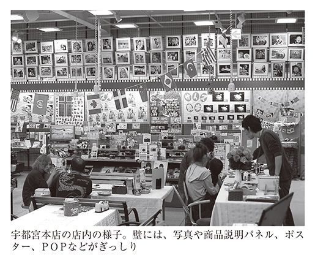
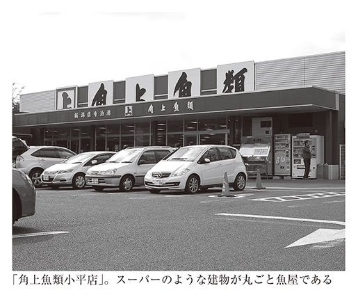
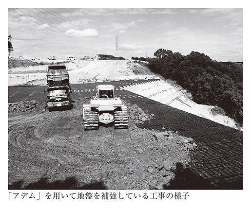

| 一億人に伝えたい働き方 無駄と非効率のなかに宝物がある (PHP新書) | |
| 鶴岡弘之 | |
| PHP研究所 (2012) | |

一億人に伝えたい働き方
無駄と非効率のなかに宝物がある
鶴岡弘之
本書を手に取ってくださってありがとうございます。これから日本各地のユニークで愛すべき一一の会社を紹介します。
私は、日本ビジネスプレスが運営するオンラインメディア「JBpress」の記者として全国の中小企業を取材し、記事を執筆してきました。取材に訪れたのは、いずれも地域に根差しながら独創的な商品、サービス、経営手法で業績を伸ばしている企業です。この本は、そのなかから特に読者の反響が大きかった記事を収録したものです。
この本を読んで何を感じるかは人それぞれだと思いますが、少なくとも二つの読み方ができるのではないかと思います。
まずストレートに、中小企業をモデルケースにした「経営論」として読んでもらえるのではないかということ。
厳しい市場環境のなかで競争に打ち勝ち、持続的に成長していくために、どのような目標を掲げ、どのような体制を整え、どんな商品、サービスを打ち出していくのか。収益性を向上させるカギは何か。社員のモチベーションをどのように高めるのか。この本は、そうした経営戦略の描き方の事例集になっています。
なかには、いわゆる経営の一般常識とは反することを行っている会社も登場します。しかし、それらはいずれも「現場」で生まれるべくして生まれた経営手法だということをご理解ください。
大企業が大型タンカーや豪華客船だとすれば、中小企業は波間を漂う小型船です。日々生きるか死ぬかの勝負をしているわけです。だからこそ、顧客と真正面から向き合い、これでもかというほど脳みそを絞り上げて作戦を練るのです。そうやって編み出された経営手法には、規模に左右されない経営の真実があります。
もう一点、この本は働き方の教科書としても読んでもらえるのではないかと考えています。本書のなかから働き方のヒント、ひいては生き方のヒントのようなものを見つけてもらえたら幸いです。
「JBpress」に記事を掲載した際、ネット上の多くの読者から、「こういう働き方をしてみたい」「自分もこうありたい」という声が寄せられました。本書に登場する経営者は、何らかの強い「思い」や「信念」にもとづいて仕事に取り組んでいます。そんな働き方に共感し、うらやましいと感じた人が数多くいたようです。
本書で取り上げた会社の業種や形態、規模はさまざまです。なかにはグループで四〇〇人以上の従業員を擁し、東証二部に上場している前田工繊のように、もはや中小企業と呼ぶのがはばかられる会社も含まれます。しかし、経営者の強い「思い」が目に見える形で経営に直結しているという点は、どの会社も共通しています。
情熱を抱いて仕事に取り組んでいる人たちは幸せそうに見えます。それは、どんな内容の仕事でも変わりはありません。大企業ではなくても、大都会ではなくても、陽の当たる華やかな仕事ではなくても、幸せに働ける場所があるということです。
本書を読むと、そういう会社が実は皆さんのすぐそばにあるということが分かるはずです。そこの通りを曲がったら、ひょいと目の前に現れる。「幸せな会社」は皆さんの町のすぐ近くにあるということを、日本中の人々に知っていただきたいと思います。
なお、本書に登場する会社のなかには、取材したときから三年以上が経ち、経営環境や事業内容に少なからず変化が生じたところもあります。そうした会社についての記事は最小限の修正をするにとどめ、更新すべき情報を記事の最後に追記として加えました。
また、構成は「顧客とまっすぐに向き合う」「最高の品質を追求する」「幸せをみんなに届ける」という三つの章に分けられています。読みやすさを考えたうえで分類しましたが、どの会社も顧客とまっすぐに向き合い、最高の品質を追求し、幸せをみんなに届ける努力をしていることは言うまでもありません。
では、本編をお読みください。
一億人に伝えたい働き方 目次
サトーカメラ（栃木県宇都宮市）
もう三十分経った。
店員がカウンターの上に数台の一眼レフカメラを並べて説明を続けている。
店員の話を聞いているのは、二歳ぐらいの小さな子供を連れたお母さんとおばあちゃんである。店員は手振り身振りを交えてカメラを操作してみせ、ときにはお母さんにファインダーを覗かせたりしながら、使い方を説明している。
お母さんとおばあちゃんは、カメラに関してずぶの素人のようだ。きょとんとした顔をして説明を聞いているが、本当に分かっているのだろうか。見ていてこちらが心配になってくる。
もしも業務効率化のコンサルタントがこの店を見たら、「なんと非効率的なのか」と顔をしかめるに違いない。
買うのか買わないのか分からないような相手に、なぜそんなに時間をかけて対応しているのか。相手は素人なんだから、うまく説得してさっさと買わせるか、適当なところで話を切り上げてしまえばいいではないか。
それだけではない。店内を見渡すと、客が写真をプリントするセルフプリント機の前にソファが置いてある。客がソファに座り、店員に教えてもらいながら機械の操作をしている。店員が「うわあ、これはいい写真ですね」などと言いながら、プリントする写真を一緒に選んでいる。
セルフプリント機の前にソファなんて置いてあったら、客がいつまでも腰を落ち着けてしまう。そもそも一人で操作してもらうための機械なのに、なぜ店員がつきっきりになっているのか。
さらに、商品の展示棚には、手描きの文字とイラストを描き込んだＰＯＰ（販促ツール）が至るところに飾られている。カメラメーカーが立派なＰＯＰを用意しているはずなのに、なぜそれらを使わないのか。
ここは、栃木県でチェーン展開するカメラ販売店、サトーカメラのスーパーカメラセンター宇都宮本店。
一見すると、まるで無駄と非効率のかたまりのような店である。だが、実はこの店こそが栃木県最強のカメラ店なのだ。
宇都宮は家電量販店の激戦地区だ。北関東発祥のコジマ、ヤマダ電機、ケーズデンキなどが大型店を構えてしのぎを削る。二〇〇五年には宇都宮駅前にヨドバシカメラがオープンし、競争に拍車がかかった。
だが、そういう並み居る強豪を相手に、サトーカメラはカメラ販売でぶっちぎりの強さを見せる。カメラ販売シェアは十四年連続で栃木県ナンバーワン。デジタル一眼レフカメラの販売シェアは県内で六〇％以上に達するという。
にわかには信じられないシェアの高さだが、サトーカメラの店舗に足を踏み入れると、納得せざるを得ない。
宇都宮本店を取材に訪れたのは平日の午前中だったが、主婦、子供連れの家族、若い女性、お年寄りなどが次々に訪れてきて、客が途絶えることがない。常時、一〇人ぐらいの客で店内が賑わっている。店内のあちこちで店員と客が顔を突き合わせて会話をしており、ときには笑い声も聞こえてくる。
サトーカメラの取材のあと、宇都宮の他の大手家電量販店のカメラ売り場を回ってみた。客の数はせいぜい二～三人。客が一人もいなければ、店員の姿も見えないという寒々しい売り場もあった。
客の数が違うのは、たまたまそのときだけだったのかもしれない。しかし、それを差し置いても、店内の雰囲気は明らかに違う。
サトーカメラの店内は、至るところに手描きＰＯＰや大量の写真が貼り巡らされ、それらが異常とも言えるほどの密度感と熱気を醸し出している。

一般的な大手家電量販店の売り場とは似ても似つかないこの不思議なカメラ店は、一体どのようにしてでき上がったのか。何らかの哲学や強い思いがないと、こういう店にはならない。それが一体何なのかを知るために、代表取締役専務・佐藤勝人氏を訪ねた。
佐藤氏は一九八八年に、両親が市内で営んでいた小さなカメラ屋を兄と継いだ。以来、大手家電量販店のたび重なる来襲に屈することなく、栃木県内に一八店舗、年商二五億円のカメラチェーンをつくり上げた。
佐藤氏が大手家電量販店との激闘の末に見出した「商売の極意」とはどのようなものなのか。
━━とても個性的な店づくりをされていますね。店づくりの基本的な考え方について教えてください。
佐藤勝人氏（以下、敬称略） 一言で言うと効率を求めない店。現場に徹底的に言い聞かせたのが、効率は考えなくていい、客が納得するまで話をしてやれということ。
以前は、接客は時間を区切ってやれとか言ってたんですよ。でも、そんなのもういい。もう座らせろと。立ったままでお前の話なんて聞いていられない、おじさん、おばさんを座らせてじっくり話をしろと。
プリントするお客さんに対してもそう。日本のカメラ屋はどこも機械の前にお客さんを立たせて操作させるよね。でも我々の店は、ソファに座ってのんびりやってもらう。そして我々も一緒に座って、一緒に写真を選んであげる。超非効率でもかまわない。それは、お客さんの思い出をきれいに残すため。それがいちばん大切なことだから。
━━「思い出をきれいに残す」というのは、どこから出てきたんですか。
佐藤 最初はそんな言葉はなかったんですよ。自分は実家が写真屋だったから後を継いだだけ。成功して金持ちになりたいって、ただそれしか考えてなかったよね。
店長になった当初はまったくダメな店だったけど、「この商品ならば、品揃えも専門知識も他店に絶対負けない」っていう得意商品をつくって、それに特化して売りまくった。その作戦で、うわーっと成長することができた。
でも、二〇〇〇年に入ってからデジタルが登場して、カメラ業界が激変するんだよね。それまでは行け行けドンドンでやってきたんだけど、急に先が見えなくなっちゃった。
メーカーは「フィルムはなくならない」って言うんだけど、自分でデジタルを使ってみたら、こんなに便利なものはない。だから「フィルムカメラとデジカメは共存していく」っていうメーカーの理論は信じられなかった。それで、迷ったんだよ。業界構造の大変化にどう対応すべきか、どう進むべきか、一体何を売っていけばいいのかって。
佐藤 困ったなあって思ったときに、結局、自分たちはなんのためにこの商売やってんのかなって改めて考えてみた。そもそも、なんでうちの親父はこの会社を始めたのか、なんで自分たちはカメラ屋、写真屋やってんのかなって。
人はなんのためにカメラを買うのかってことだよね。すると、実はカメラを買ってるんじゃないってことが分かってくる。行き着いたのが、たぶん、思い出をきれいに残すためなんだろうなっていうこと。
我々は儲けるために商売をやってるのかもしんないけど、突き詰めてみれば、そういうことのためにやっているんだろうなって。
━━そこで、お客さんにとって便利なデジタルカメラに一気にシフトしたわけですね。
佐藤 そして、「思い出をきれいに残そう」という言葉を掲げて、これからはこの言葉のもとにいくぞと大号令をかけた。それまでサトーカメラは俺の独裁だったんだけど、これからはお客さんとこの言葉に従えと。それが二〇〇三年頃の話。
━━同時に店づくりも大きく変わった。
佐藤 接客もサービスも棚も全部変えた。もう効率は追い求めなくていい、と。そうすると、お客さんがきちんと反応してくれるんだね。
例えば、うちで、ある商品を初めて知ったお客さんは、他の大手量販店に値段を調べに行く。でも、七割の人は「やっぱりあんたのとこで買うわ」って、うちに戻ってくる。もしも他の店が安かったら「ここで買うから安くしてよ」って言ってくるし、「高くてもいいよ」って言う人もいる。そして八割のお客さんはリピーターになる。
以前はうちも「こんなに安いですよ。ポイントがこれだけ貯まりますよ」ってやってたんだけど、二年前にポイント還元制度もやめちゃった。
ポイントは結局、カネで釣るってことでしょ。我々は金で釣るんじゃなくて、思い出をきれいに残すための商品でお客さんに来てもらう。そうするとポイントをやめた段階で、一瞬、お客さんが離れるんだけれども、最後は戻ってくる。
━━効率を求めないと、利益が減っていくのではないですか。
佐藤 それが、利益率は上がってるんですよ。だってポイントをやめれば利益は上がるよね。お客さんも瞬間的に減ったけど、結局、戻ってきて、売り上げが伸びて利益も増えている。
━━利益はどれくらい伸びているんですか。
佐藤 単純に言うと、二〇〇五年頃は粗利が平均で二五％ぐらいだった。それが二〇〇七年頃に三五％になった。そのときは、もうこれ以上は無理だろうなと思ったんだけど、今は四〇％近くまでいっている。
━━ポイント還元制度をやめたことのほかに、利益が増えた要因はありますか。
佐藤 別に高く売っているわけじゃないんだよ。きちんとした商品を自分の目で仕入れて売れば、儲かるってことなんだよ。
ヒット商品っていうのは、たいてい「ブランド」のおかげだからね。メーカーがテレビＣＭをばんばん流して大手家電量販店が重点的に売って、両者が結託してつくり出しているのが、今の売れ筋商品。
でも、テレビＣＭに乗る商品なんてごく一部だよ。それ以外が九〇％以上なんだ。我々はそれらのなかから、操作のしやすさ、ホールディング、頑丈さ、レンズのコーティングなどを全部調べて、「思い出をきれいに残すためにはこれだよね」っていうカメラを探し出してくる。
お客さんは、広告で目にするカメラしか知らない。だから最初は、なんでそんなカメラを押しつけようとするんだって思うよね。
でも、調べていくと、実はすごくいいカメラだということが分かってくる。実際にお客さんが、本当にありがとうね、あんたのすすめてくれたカメラ、本当によかったわあって言ってくるからね。今は、サトーカメラのほうが全然ものがよくて安いじゃんと、みんな思ってくれている。
━━目利きの眼があると、埋もれている優れた商品を安く仕入れられるというわけですね。
佐藤 他の店もみんな真似して、うちで売っているのと同じ商品を仕入れて売ろうとするんだよ。でも、売れない。大手家電量販店では、誰もが知っている人気商品を置かないと売れない。だって、説明できる店員がいないんだから。結局、売れ残るよね。売れ残ったのはメーカーに返品されて、また、うちが安く買い取る。
━━徹底的に客の立場に立つと、売るべきものが見えてくる。
佐藤 商売を始めたときは、我々も客をよく見てなかった。売ったら終わりで、はいさよなら、はい次って感じで。効率を追求するのが世の中では正義だったからね。我々も知らないうちにそれをやってたんだ。
なにしろここは激戦区だから。隣の店とケンカして、客を取った取られた、生きるか死ぬかの世界だから。生き残るのに必死でさ。自分のことしか考えてらんないって。
でもあるとき、お客さんが、あんたのおかげよって言うんだよ。もう何年も前に初孫が生まれたときにうちでカメラを買って、それから写真が趣味になっちゃったおばあちゃんなんだけど。そのおばあちゃんが、あんたのとこでカメラを買ったおかげだよって言うんだよ。それまでの六十年の人生より、あんたと出会ってからの毎日のほうが人生のなかでいちばん楽しかったって。
「えー!?」と思ったよ。ちょっと待ってよ、そんなこと想像もしなかったよ、そこまで思ってくれてたのって。じゃあ俺、もうちょっと真面目にやろうっていう気になったよ。そのときだよね、本当に気がついたのは。
━━客に気づかされ、教わることは多いですか。
佐藤 普通の中小企業は、大企業や大手メーカーの話ばかり聞くじゃん。偉い人の話だけ聞いて、それに倣おうとする。そして、どんどん敷居を上げていって、いつの間にかマニアばかり相手にするようになる。ターゲットを絞って高く売ることが「生き残る術」だっていうわけだ。
でも、我々は逆。ど素人のおばちゃん、ど素人の小学生から学ぶ。ときにはおばちゃんから怒られるよ。あんた、分かってないわねえって。でも、ああ、なるほどなあって思うことがいっぱいある。我々はそうやって学んでいる。
━━「素人」を大切にしているんですね。
佐藤 小学生、高校生からおじいちゃん、おばあちゃんまで、「いろいろ教えてくれてありがとう。ここでカメラを買ってよかった」って言ってくれる。全然カメラのことなんて分からなかった人が感謝してくれる。そう言われると、こっちだってびっくりするよね。
だから商売の真理はそこにあると思っている。これが新たなマーケットをつくることだと。
カメラに詳しくて自分でなんでもできる人は、どこの店に行ったっていいんだよ。でも、カメラなんて全然分からなくて、使い方を知らない素人が世の中には八割も九割もいるわけだ。
国内のカメラマーケットは衰退しているって言われるけど、見方を変えればそんなことはない。町に一〇万人の人が住んでいたら、その一〇万人全員がお客さんとして店に来たんですかっていう話だよ。一〇万人のうち一万人が来ているだけでしょ。残りの九万人は思い出をきれいに残してないじゃん、全然。
この地域にはカメラのことをよく知らない人がまだまだたくさんいる。そういう人たち全員に思い出をきれいに残してもらいたい。それを考えたら、他の地域には出ていけないよね。
さて、冒頭の家族はどうなったのか。
接客はいつまで経っても終わることがなく、結局、店員は一時間半もの間、説明を続けていた。最後にその家族はカメラとカメラ用ショルダーバッグを購入して、満足げな顔をして帰っていった。
接客をしていた店員、副店長代理の中野裕章さんに聞いてみた。
「いつもあんなに時間をかけて接客しているんですか。一体、何をそんなに長々と説明していたんですか」
中野さんの答えは以下のようなものだった。
「接客の時間はお客様によってさまざまです。先ほどのお客様は、他店のチラシをご覧になっていて、お買いになりたい商品の目星はついていたんです。でも、一眼レフカメラはまったく使われたことがないというので、一眼レフの基礎から説明していました」
「買いたい商品が決まっているのなら、さっさとそれを売ればいいじゃないですか」
「そうはいきません。納得しないで買っていただくわけにはいきません。納得して買っていただいて、きちんと使いこなして満足していただかないと困ります」
一眼レフカメラの基礎知識だけではなく、家族のなかで誰が使うのか、いつ、どんな場面で使うのかなどをヒアリングし、状況に応じた撮影の仕方も説明していたのだという。
一時間半も「ど素人」を相手にし続けるなんて、まったく非効率にもほどがある。
でも、おそらくその家族はリピーターになって、これからもずっとサトーカメラに通い続けることだろう。
（二〇一一年十月取材）
日本海からやって来た「規格外」の魚屋の秘密
角上魚類（新潟県長岡市）
こんな魚屋は初めて見た。
四月のとある土曜日の午後。店の前に約一〇〇台収容できる専用の駐車場があって、五人の警備員が車の誘導に飛び回っている。
多摩湖や狭山湖にほど近い新青梅街道沿いに、その魚屋は店を構えていた。建物は一見すると普通のスーパーマーケットのようだ。だが、スーパーの魚屋とはスケールが違う。こちらは一軒の建物が丸ごと魚屋なのだ。
魚を買いに来た客の車で、駐車場はぎっしりと埋まっている。それでも次から次へと車がやって来て、駐車場に入りきれない車の列ができる。
四月の週末でこの状態なのだから、年末は推して知るべしである。年越し用の料理やおせちの魚を買い求める客が殺到して、道路沿いに数珠つなぎの車の行列ができ、駐車場に入るまで一時間以上も待たされるという。
その店とは、東京都東久留米市にある「角上魚類小平店」。近隣で圧倒的な知名度と集客力を誇る「行列ができる」魚屋である。

店内に入ると、売り場の広さと客の熱気にまた目を見張る。売り場の面積は三〇〇坪近くはあるだろうか。一店舗の魚屋としては破格の広さである。
ひときわ賑わっているのが、対面販売コーナーだ。北海道から九州まで日本全国の港で揚がった魚介類が「むき出し」の状態で売られている。海に戻したらそのまま泳ぎ出しそうな魚が、敷き詰められた氷の上にずらりと並んでいる様は壮観だ。
そのコーナーで、赤いユニホームを着た店員の威勢のいい声が響き渡る。「いらっしゃい、いらっしゃい。今日はメバルがいいよ。メバルがっ」。
多くの客は、魚を買うときに「サバを三枚におろしてくれます？」「このタイを煮物にしたいんですけど、切り分けてもらえないかしら」などと店員に注文し、調理・加工をしてもらう。
コーナーの奥には調理台があって、店員が注文通りに魚をさばいていく。さばいた魚はビニール袋に入れられて、「はい、お待たせしました」と客に手渡される。
若い夫婦が珍しい魚を目の前にして、店員に訊ねる。「この『じょんじょろ』っていう魚はどうやって食べるんですか」。店員が「頭を取って、煮つけにするとおいしいですよ。柳川にしてもいいですね」と答える。「へえ、どんな味なんですか」と会話が続く。
いつの頃からか、魚屋は、切り分けてパックした魚を売る場所になってしまった。しかし、かつての魚屋は「今日は何がおいしいの？」「この魚はどうやって食べるの？」「鍋にしたいんだけどいい魚ある？」などと、店員と会話しながら買い物をする場所だった。この店は、そういった在りし日の魚屋のスタイルである。
午後三時、店内に「チリンチリンチリン」と鐘の音が響き渡り、対面販売コーナーの一角で、本マグロの解体ショーが始まった。マグロを解体するのは、江田勉店長。あっと言う間に周囲に黒山の人だかりができる。
「今日は店長の私がさばきますからね。私、この四月に店長になりましたんで、よろしくお願いします。店長になったお祝いですからね、今日は儲けなしで特別サービスしますよ」
エラの部分にざっくりと包丁が入り、最初にカマが切り分けられた。若い店員が二つのカマを高く持ち上げ、大声で叫ぶ。「カマだよ、カマだよ。三〇〇円、三〇〇円でお分けしますよ。はい、欲しい人！」。いっせいに大勢の客が手を挙げる。
「じゃあ、僕とじゃんけんしてください。最初はぐー、じゃんけんぽんっ。負けた人は手を下ろしてくださーい」。じゃんけんに負けた客から、「あ～」というどよめきが上がる。
一眼レフカメラのレンズをマグロに向けて連写している客もいれば、「マグロの解体だって！ 早く、早く」と、大声で家族を呼び寄せるお父さんもいる。みんな興奮状態というか、お祭りのような騒ぎなのである。
角上魚類は新潟県長岡市に本社を構える鮮魚店チェーンだ。もともとは江戸時代から続く網元、卸問屋だったが、一九七四年に小売業に進出。現在（二〇一〇年）、新潟、長野、群馬、東京などに一九店舗を展開している（二〇一二年五月時点で二二店舗を展開）。
二〇〇九年度の売り上げは約一九五億円、最終利益は約四億円（五年前の二〇〇四年度は、売り上げが約一七八億円で利益が約二億円だった）。
角上魚類にこれだけ客が集まるのは、品質、価格、サービスで、圧倒的な「満足感」を提供しているからに他ならない。新鮮な魚を豊富に揃え、安く提供する店には、客がやって来るのである。
しかし、口で言ってしまうのは簡単だが、それを実現するのは実は極めて難しい。ほとんどの魚屋にはそんなことはできないのだ。
では、なぜ角上魚類にはできるのか。圧倒的な品数と品質、そして値段の安さをどうやって実現しているのか。
それを解き明かすために、角上魚類の発祥の地へと足を運んだ。
新潟県長岡市の寺泊は、佐渡の島影を眼前に望む古くからの港町だ。ここに「魚の市場通り」（通称「魚のアメ横」）と呼ばれる観光スポットがある。
国道四〇二号線沿いに一〇軒近くの魚屋、みやげもの屋が横一列に軒を連ねている。国道を挟んで巨大な駐車場があり、休日には観光バスが並ぶ。
実はこの観光スポットは、三十数年前に建てられた一軒の魚屋から始まった。地元の網元・卸問屋のせがれ、下浩三さん（現角上魚類社長）が、なんの店もなく人通りもほとんどない土地に、一軒の魚屋をぽつんと建てたのである。それが角上魚類の第一号店だった。
そんな辺ぴな場所に建てられた魚屋が、またたく間に大繁盛店となる。挙げ句の果てには、観光バスがやって来る一大観光地にまでなってしまった。まるで砂漠にラスベガスをつくってしまったような話なのだ。
この第一号店には、角上魚類のエッセンスがぎっしりと詰まっている。そのエッセンスは今も変わらない。はっきり言ってしまえば、角上魚類が各地に展開している店舗は、いずれも第一号店の忠実なコピーである。
下社長は、寺泊で一体どんな店をつくろうとしたのか。そして、今を貫く角上魚類の経営哲学とは――。第一号店のすぐ裏にある角上魚類の本社に、下社長を訪ねた。
━━今や寺泊の一大観光スポットになっている「魚の市場通り」ですが、もともとは下社長が建てた一軒の店から始まったそうですね。
下浩三社長（以下、敬称略） 私の家は代々ずっと網元と卸問屋をやってたんだけど、昭和四十年代からスーパーマーケットが台頭してきて、小売店の数がどんどん減ってきた。それで、このまま卸をやってちゃダメだなって思ったんです。小売屋に卸していても、しょうがねえなって。
ちょうどダイエーが新潟に出てきたんで、見に行ってみた。すると、魚がけっこう高いんですよ。自分で直接売れば、あの半値以下で売れるなと。それで自分で売ろうと思って小売を始めたんです。
銀行からお金を借りるのが大変だったけど、新潟で商売やってて景気のいい親戚がいたんで保証人になってもらって、五〇〇〇万円借りられた。そのお金で店を建てました。一九七四（昭和四十九）年の十一月でした。
最初は、周りに建物は一軒もなかったんです。うちの店が一軒だけだった。私が商売とか経営のことをもっと分かっていれば、田舎のこんな何もないところに五〇〇〇万円も投資して店をつくらなかったと思う。何も知らなかったからやれたんだね。
でも、寺泊とか新潟の市場に行って、その日の安い魚に特化して、それだけ大量に買ってきて直販するもんだから、スーパーとか魚屋の三分の一ぐらいの値段で売れてたと思うんだ。「寺泊に行くと、いい魚を安く売っている店がある」ってクチコミでぽつぽつと客がやって来るようになって、半年ぐらいしたら一気に客が増えました。
最初は一日に売り上げが三万円ぐらいしかなかったけど、半年くらいで二〇万円、三〇万円売れるようになって、一年経ったら五〇万円ぐらいになってた。寺泊周辺だけじゃなく、燕や長岡とかからも客が来るようになって、そのうち新潟だけじゃなくて長野県のクルマも来るようになりました。
店を開いてから三～四年くらい経った頃でしょうか、隣に魚屋ができました。それから三～四年経ったら、また隣に魚屋ができて、どんどん店が増えていって、今のような通りになったんです。
ただ、周りに店が増えても、うちの客が減ることはなかったですね。お客さんは他の店と比較してうちのほうにどんどん来ちゃうんですよ。だから店が増えたのは、結果的によかった。お客さんは流行っているところに行きたがるから。圧倒的にみんなうちに来ちゃうんだね。
━━角上魚類の店を訪れると、隅々まで神経が行き届いていて、本気でいい魚を売ろうという姿勢が伝わってきます。店づくりの信念、ポリシーのようなものはありますか。
下 店のつくり方や売り方は、最初に店を始めたときから、今でもずっと変わりません。今、角上魚類のすべての店には、「鮮度はよいか、値段はよいか、配列はよいか、態度はよいか」と「四つのよいか」を書いて貼ってあります。これは私が寺泊で店を開いた一年目に書いたものです。
店を始めたとき、こんな田舎にわざわざ車で来てもらうんだから、「来てよかったわ」と思ってもらわないとダメだと思っていました。
私は生まれて初めて小売をやったもんだから、来てくれたお客さんがありがたくてありがたくてしょうがない。お客さんたちが「ものすごく安い」とか「いきがいいわ」とか喜んでると、もう、嬉しくってさ。お客さんにどうやって喜んで帰ってもらうか、それしか考えてなかったんです。
じゃあ、どうしたら喜んでもらえるのか。そして思いついたのが、まず鮮度だと、それから価格、魚種、そして売り場の応対だと。それで「四つのよいか」になったんです。
それから三十数年経ちましたけど、「四つのよいか」は今でも通じていると思います。その言葉は正しかったんだと思います。
━━角上魚類の店は、なぜあんなに広いんですか。また、どの店でも大量に生魚を並べて対面販売を行っています。対面販売にこだわる理由を教えてください。
下 角上の店の陳列ケースは普通のスーパーより三倍くらいは大きい。売り場の面積は最低八〇～一〇〇坪は必要だと考えています。それぐらいないと、お客さんに満足してもらえる品揃えを確保できません。
対面の売り方も、店を始めたときからのやり方です。昔の魚屋はみんな対面だったでしょう。スーパーができて初めてパックで売るようになったけど、昔はみんな対面でやってたからパックなんてなかった。
対面だと、魚そのものを見てもらって選んで買ってもらえるし、お客さんの要望を聞きながら刺身にしたり切り身にしたり、さばくことができる。食べ方も説明できますよね。
それをするためには、店員に技術が必要。今年も新卒の新入社員が三五人入りましたが、みんな包丁を持って魚をさばけるように教育しています。すぐには無理だけど、一年も経てばみんなできるようになります。
そういう理由もあって、我々は店をぼんぼん増やさないんです。今までは店をつくるとしても、一年にせいぜい一店舗。一つの店には、刺身を切る人とか寿司をつくる人とか、一〇人ぐらいの人間が必要になります。新しく店をつくるときに既存店から三人も四人も人を抜くと、既存店の質が落ちてしまいます。
━━角上魚類のような鮮度と価格で魚を売っている店は他になかなかありません。なぜ他の魚屋にはできないのでしょうか。
下 魚屋っていうのは難しいんですよ。魚はどんどん鮮度が落ちていく。次の日には鮮度が悪くなるし、三日目になると我々はもう売り物にしたくないと思う。
だからといって、魚を一〇ケース仕入れて、二～三ケース捨ててたら、もう利益なんて出ないんです。仕入れにロスが出れば、利益が食われて赤字になってしまいます。だから、できるだけその日のうちに、せいぜい次の日までに売り切らなければならない。
そのためには、まずは「仕入れ」なんですよ。売れ残らないようにするために、「今日はどの魚をどれだけ買って、いくらで売るか」という判断が大事なんです。
うちには私を含めて十数人のバイヤー（仕入れ担当者）がいて、寺泊と新潟、築地の市場で仕入れています。バイヤーは、市場でその日の漁獲量と価格を見て、できるだけロスを出さないように仕入れの量と売り値を決めています。
安い魚を大量に仕入れたら、それを重点的に売る。高い魚を仕入れても結局は売れ残ってしまいます。
━━毎日、臨機応変に判断して仕入れをやっていることが強みなのですね。
下 店のほうでもその日のうちに売り切る工夫をしています。
例えば、朝、ケースのなかに並べたマグロの切り身パックがあったとします。午後二～三時になっても残っているようだったら、寿司にして並べたり、売れ残っている切り身があったら刺身にしてしまうなどして、調理・加工することで早いうちに売り切るようにします。
各店舗の店長には、その日のお客さんを見てどのタイミングで調理するかとか、廃棄とか値引きなどのやり方も細かく指示しています。いかにして売り切るかが大事なんです。捨ててしまったら粗利なんてほとんどなくなりますから。
━━安さの秘密は何でしょうか。他の魚屋やスーパーと比べると、総じて二割は安いのではないかと思います。
下 あまり安さを前面に打ち出そうというつもりはないんですけどね。基本は、やはり安く仕入れること。さっきも言ったように、我々の強みは、十数人のバイヤーが、新潟と築地の両方の市場で仕入れていることです。
新潟と築地の市場には、毎日、全国から魚が集まってくるんですが、両方とも似たような魚が集まるんです。そこで毎朝、両方の市場にいるバイヤーが電話で連絡を取り合って、「こっちでは何がいくらだ」と情報をやり取りします。そうやって量と値段を突き合わせて、「では、その魚は築地から納めよう、これは新潟から」と調整して、それぞれの市場から全国の店舗にトラックで発送します。
セリでも、我々はできるだけ安く買う。例えば、その日に漁獲量の多い魚は、セリの途中でどんどん値段が下がっていきます。そういう魚は先に買わないで、他のみんなに先に買わせてしまう。そして、あとで値段がぐっと下がったときに、一気に買うわけです。
逆に、その日の入荷量が少ない魚はあとで値段が跳ね上がっていくから、先に買ってしまったりする。こういうのは、ずっとやってないと分からない。慣れの部分が大きいですね。
また、たとえ同じ値段で仕入れても、我々の店は他の魚屋やスーパーとは売り値が違います。粗利をそんなに乗せてないし、我々の店舗は基本的に郊外のロードサイド型なので、土地代が高くない。都心のスーパーとかデパートとかに店を出している魚屋は、家賃が高いから、どうしても売り値が高くなるでしょう。
━━消費不況と言われるなかで、売り上げと利益が拡大していますね。景気の影響は受けていないんですか。
下 確かに世の中は景気が悪くて、スーパーも売り上げが落ちている。でも、うちはこの一年でも売り上げが伸びているからね。あまり景気には左右されていません。
結局は、店の質がいいか悪いかで、お客さんが来るか来ないかが決まるんです。
店の質を維持するのは簡単なことではありません。今、一九店舗やってますが、そのなかで一店舗でも変な店があれば、「角上」に対するお客さんの信用が変わってきてしまう。
一時期、我々が魚と看板だけを提供する「フランチャイズ店」を何店か出したことがあるんです。店を見に行ってみると、魚の鮮度や価格に問題がある。お客さんに売っていい魚じゃないんです。
でも、オーナーが違うから、あれこれ注文をつけられません。そういう店に角上の看板は出せないと思い、三年でフランチャイズ契約を打ち切りました。その後、それらの店は結局、全部つぶれてしまいました。
そういうことがあって、今は全部直営にして、一店舗、一店舗チェックして回っています。「お客さんに対して責任の持てる店」にしようと神経を使っているわけです。
寺泊で店を始めたときに、何も買わないで帰るお客さんがいると、「わざわざ来てくれたのに、気に入ってもらえるものがなくて申し訳ありません」と、いつも心のなかで思っていました。
いちばん大事なのは、お客さんに「また来よう」と思ってもらえるかどうか。喜んでもらい、支持されるような店づくりをしているか。これに尽きると思います。
（二〇一〇年四月取材）
コッコファーム（熊本県菊池市）
農協で職員の説明を聞き終えて、松岡義博氏の心をよぎったのは「これはどこかおかしいんじゃないか」という思いだった。
養鶏を始めてから一年ぐらい経ったある日、卵を納めている地元の農協から連絡があった。急いで現金を持ってきてほしいという。行ってみると職員は次のように説明してくれた。「あなたの卵の売り上げよりも餌代が上回っています。現金を入れてくれないと、農協から借金をすることになりますよ」。
それまで、松岡氏は農協から飼料（餌）を購入し、つくった卵はすべて農協に納めていた。その際、卵が市場でいくらで売れているのか、そして餌代がいくらかなどを把握していなかった。計数管理に無頓着だったのは、確かに自分の落ち度だ。でも納得できなかった。これだけ手間隙かけてつくって出荷しても元が取れないなんて、何かがおかしい。このままやり続けたら、いつか破綻するのは目に見えている。
松岡氏は、そもそもなぜ自分が養鶏を始めたのかを思い起こしてみた。「取れたての卵をお客さんに直接届けたい。〝私がつくった卵です〟と言って届けたい」――。そう思って養鶏を始めたのだ。それなのに今は農協や卸売市場が介在し、最終的に誰が買ってくれているのか分からない。値段も自分でつけられない。
「どうもこれは自分がやりたかったこととは違うようだ」と薄々感じていた。くすぶっていた思いが次第に大きくなり、農協とのやり取りで、ついに決心がついた。「自分で直接、お客さんに卵を届けよう」。
以来、約四十年にわたり、松岡氏は農業の常識と闘い続けてきた。松岡氏が立ち上げた養鶏会社、コッコファームは、社員約一二〇名、売り上げが約二五億円、経常利益が約五億円（二〇〇八年度）という日本有数の農業生産法人に成長した。
松岡氏が養鶏を始めるまでには紆余曲折があった。だからこそ養鶏への思い入れは深い。松岡氏は一九四九年、農家の長男として生まれた。中学を出て農業の専門学校に進み、一時的に家の仕事を手伝ったものの、「農業は性に合わない」と家を飛び出してしまった。
都会にあこがれて向かったのは、横浜だ。日産自動車の横浜工場で季節労働者として働き、自動車を組み立てた。工場の勤務時間が終わると、日雇い労働者に早変わりである。二～三日徹夜して働くこともざらだった。「自分が何をしたいのか分からない」という不安といらだちを、働くことで紛らわしていた。
ところが、そんな生活に終わりを告げる事件が起きた。自動車工場で溶接作業をしていたら機械に手を挟まれて大怪我をしたのだ。療養生活をしているときに、初めて自分とじっくり向き合った。「親父に引き止められるのを振り払って、ここまでやって来た。それがこのザマだ。俺は一体何をやっているんだ」。
「本当は田舎のほうがいいのかもしれんな」。ふとそう思った途端に、考え方が一八〇度変わった。「田舎の人たちは気づかないけれど、田舎には、都会の人にとって魅力的に映るものがある。田舎には、田舎にしかない何かがある。過疎だって本当は宝なんじゃないか」。
いったん「田舎がいいかもしれない」と考えたら、すべてのマイナス面がプラスに見えてきた。手が治ったら田舎に帰って農業をやろうと心に決めた。こうして松岡氏は菊池に舞い戻った。手をつけた仕事の数はすでに一〇を超えていた。二十歳のときである。
実家に戻ると縁の下に一〇羽の鶏がいた。その鶏が産んだ卵を手に取ると、ほんのりと温かい。「この温かい卵を、私がつくった卵ですと言ってお客さんに手渡せないだろうか」。その思いから離れられなくなった。
「養鶏ならば、天候に左右されることなく一定の労働で安定的に生産できるはずだ」という読みもあった。養鶏を営む近所の農家からは、「これから養鶏なんて始めたってダメだよ。全然、利益が出ないよ」と言われた。しかし、思い立ったらもう誰にも止められない。
廃業した養鶏業者から木材や金網をもらい受け、鶏舎をこしらえた。四〇〇羽の鶏を仕入れ、一九六九年、たった一人で養鶏をスタートした。養鶏はまったくの未経験なので、飼育や販売面などで全面的に農協に頼るしかなかった。
だが、一年ほど経ったときに「餌代が足りない」と農協から電話がかかってきたのだ。それが冒頭の一件である。これを機に松岡氏の農業人生はまったく違う方向へ歩き出すことになる。
「直接、客に卵を届ける」ことを決意した松岡氏は、飼育から販売までを自ら手がけることにした。餌は農協からではなく、卸売商社から調達する。そして鶏が産んだ卵を小型トラックに積んで、スーパーや小売店へ配送するのだ。
「一パックでもいいから置かせてください」。スーパーの担当者に頭を下げ、卵売り場に無理やり置かせてもらった。ただ置いただけでは、客に買ってもらえない。そこでガリ版刷りでチラシをつくり、卵の前にクリップで貼りつけた。チラシには「私がつくった卵です。この養鶏場でつくっています。養鶏場にぜひお越しください」と大きく書いて、電話番号も書き添えた。
加えて、配送の合間に少しでも時間が空くと、自ら売り場に立った。とにかくお客さんに卵を直接渡したかったのだ。トレーサビリティ（追跡可能性）が叫ばれる今、生産者の情報を売り場で掲示するのは珍しいことではない。だが当時は画期的なことだった。おまけに写真ではなく、生産者本人が店頭に立つのである。
ふたを開けてみたら、この作戦が見事にお客さんの心を捕らえた。みんなが松岡氏の卵を次々と買っていく。スーパーのバイヤーの松岡氏を見る目が変わった。「卵をどんどん持ってきてくれ」と注文が入るようになった。
一九八一年、二人の弟が合流し、コッコファームの前身である松岡食品養鶏センターを設立。松岡氏は社長に就任した。この頃より、お客さんとの距離をさらに縮めるため、養鶏場のそばに直営店をつくることにした。スーパーや小売店を経由していると、どうしてもお客さんとの間にワンクッションが入ってしまう。鶏が卵を産んだすぐそばで、その卵を売りたかった。
だが、なかなか客がやって来ない。二年ぐらい細々と続け、直営店をたたもうかと考えていたときに、起死回生となる商品を考えついた。市場に出したら値段がつかないような、色やサイズが規格から外れた卵をたくさん箱に詰めて、安く売るのだ。重さにして五キロ、約八〇個の卵を詰め込んだ。
独自の餌や水を使って育てた鶏「紅うどり」の卵は、殻が硬くて割れにくい。だからこそ緩衝材なしでの箱詰めが可能となる。また直営店なので、自分たちで丁寧に箱に詰められる。これがスーパーだったら流通業者や店員に乱暴に扱われて、割れてしまうのが落ちだ。
箱詰め卵のお得感は口コミで評判となり、お客さんの行列ができるようになった。色やサイズが規格外の卵を破棄してしまうのは売り手の理屈であり、消費者のニーズを見ていなかったということだ。
次に、規格にかなった卵を三キロ、箱に詰めて売った。五キロ詰めの販売ですでに固定客がついていたので、これも大ヒットとなった。
現在、三キロ詰めの「朝取りたまご」は、養鶏場敷地内の直営売店「ふれあい館」で販売している。ふれあい館には朝十時のオープンから客が途切れることなく訪れ、朝取りたまごを次々と購入していく。
朝取りたまごの値段は、三キロ詰め（普通サイズ）で一二〇〇円。市中の二倍近くはする価格だ。だが、臭みのない味わい、取れたての卵の新鮮さ、そして何よりも生産者の顔が見える安心感がリピーターを引き寄せる。一〇箱、二〇箱とまとめ買いしていく人も少なくない。一日に一〇〇〇箱は売れるという。
コッコファームが企業として成功した要因は何か。第一に挙げられるのは、徹底的に消費者の視点に立ったことだろう。
日本の農業の大きな問題として、生産者と消費者が切り離されている点がある。松岡氏はその状況に疑問を投げかけ、行商に出るという行動に打って出た。それは、とても勇気のいることだったに違いない。だが、「温かい卵を直接お客さんに渡したい」という思いが支えとなった。この揺るぎないビジョンこそが、コッコファームの経営の根幹となっている。
できるだけ消費者のそばに立つという姿勢は、「にんにく卵黄」というヒット商品も生み出した。ニンニクと卵黄を練り上げて粉末にした健康食品である。九州地方では昔から健康維持のために、各家庭でにんにく卵黄をつくっていた。消費者の健康への関心が高まるなかで、コッコファームは自社の卵を使ってそれをつくってみた。製造、パッケージングまでを行い、健康食品販売会社に出荷する。全国区の人気商品となり、今や同社の売り上げの約七割を占めるまでになった。
松岡氏がいったん外の世界に出てから農業に舞い戻ったことも、成功の要因だろう。数々の職業を転々としたからこそ、農業の特殊性が分かったし、経営の視点で農業を見られるようになった。遠回りしたことが結果的に大いにプラスに働いた。
四〇〇羽でスタートした養鶏場は、今や約一〇万羽を飼育するまでになった。養鶏場、直営売店、農園、レストラン、展望休憩所などを擁する複合施設「コッコファーム」は、年間で約四七万人が訪れる人気スポットである。
農業後継者を育成する学校の運営、循環型農業の実践と地域への普及、高齢者の雇用と活用など、コッコファームは次々と新たな試みに取り組んでいる。農業改革への挑戦はまだまだ続く。
（二〇〇八年十二月取材）
【その後のコッコファーム】
松岡義博氏は二〇一一年一月に会長となり、社長には息子の義清氏が就任した。併せてコッコファームは有限会社から株式会社に変更した。
また同じ一月には、物産館、レストラン、コミュニティーホール、インキュベーションセンターなどを備えた複合施設「たまご庵」を新たにオープンした（従来の直営店「ふれあい館」やレストランをこちらに移設した）。
オープン初年度の二〇一一年に、たまご庵には約九三万人が来場。同年のコッコファームの売り上げは約二九億円に上った。

前田工繊（福井県坂井市）
地震大国、日本のインフラを支える中小企業がある。
ひとたび地震が起きると、道路の寸断、山間部では地すべりや土砂崩れといったさまざまな被害が発生する。そうした被災地の復旧工事に用いられるのが、前田工繊が製造する土木工事用資材だ。かつて日本が得意とした繊維産業。その技術を生かしたユニークな製品群である。
前田工繊は福井県で、伝統的な地場産業から他産業へいち早く転身を図り、成功した企業として知られている。一九七〇年代初頭、当時の花形産業である繊維業界と決別し、未知の世界である土木業界への参入を果たした。好況に沸く業界を飛び出して商売を鞍替えするのは、かなりの勇気を必要としたに違いない。しかし前田征利社長は「決断も何もありません。単に賃加工の仕事が嫌だっただけなんです」とこともなげに言う。
単に「嫌だから」と言って会社の事業を転換できるものではないだろう。それまで事業は好調だったし、なにしろその時点で前田氏は、まだ社長に就任していなかったのである。当時の社名は前田機業場。社長は父親が務めていた。大胆な事業転換を父親に進言して、衝突することはなかったのか。
この疑問に対して前田社長はこう答える。「私は父親が四十歳を過ぎてから生まれた子供なんですよ。親父が年を取っていたから、新しいことをやらせてもらえたんでしょう」。真面目な面持ちで、父親が高齢だったことが「ラッキーだった」と語る。
父親が手放しで賛成してくれたとは思えない。実際は何度も議論を重ね、躊躇する父親を説き伏せたのだろう。他の社員の抵抗も、間違いなくあったはずだ。だが、それらは前田社長にとってささいな障害だったようだ。前田社長は頑ななまでの決意を持って、ある目標を追い求めていた。その目標に近づける喜びに比べれば、身近な人間の抵抗など、ものの数ではなかったということだ。前田社長が胸に抱き続けた思いとは何か。それは、「本当の商売をやりたい」という一念である。
前田社長は一九六八年に前田機業場に入社した。前田機業場は織物業を営む会社だった。「機屋」とも呼ばれ、衣料メーカーから糸を与えられ、指定された通りに織物をつくり上げる仕事である。日本では一九六〇年代からナイロンやテトロンといった合成繊維（合繊）で洋服がつくられるようになった。福井県でも繊維企業がこぞって合繊の加工を手がけ、活況を呈していた。前田機業場もそのなかの一社だった。前田社長は「機屋の仕事は儲かった。なにしろ利益率がとてもよかった」と述懐する。
しかし心のなかでは、メーカーの言い値で言われた通りに加工する賃加工の仕事が「嫌で嫌で仕方がなかった」という。「最終製品がどこにいくらで売られているのかも分からない。だから加工していても全然面白くないんですよ」。
機屋ができるせめてもの営業活動は、「メーカーの担当者とマージャンをして、酒を飲んで、加工賃を上げてくださいとお願いすること」だった。前田社長は、「こんなのは本当の商売じゃない」と考えていた。「何か違ったことをできないだろうか」。新しい商売に思いを馳せて悶々とする日々が続いた。そんなとき、前田社長はある商材に出合う。
建設会社の熊谷組に勤めている友人に会うために、東京の熊谷組の事務所を訪れたときのことだ。事務所に行くと、へちまのように見える繊維のかたまりが置いてあった。居合わせた熊谷組の社員に「これは何ですか」と聞くと、「排水材だよ」と言う。
土木工事では、排水のコントロールが極めて重要となる。さらさらに乾いている土は固まらない。工事で盛り上げた土や、削った土の斜面は、水分が含まれているからこそ崩れないのだ。一方、水が多すぎても土は崩れてしまう。
土の強度を保つためには、水分量を適正な状態にコントロールする必要がある。そのコントロールを行うのが排水材だ。排水材は管のようにつなげられて土のなかに埋められ、水の通り道となる。
折しも政界では田中角栄が「日本列島改造論」をぶち上げ、道路網整備の機運が高まっているときだった。
「これから日本中で工事が始まるんだ。こいつは売れるよ」
「これ、もらって帰ってもいいですか？」
「おう、持ってけ、持ってけ」
その排水材は、椰子の繊維でつくられていた。繊維ならばお手のものだ。排水材を持ち帰った前田社長は心に決めた。「よし、これをつくって売ろう」。二十七歳のときだった。
その頃、大手繊維メーカーの帝人も、ポリエステルの糸を使って排水材を商品化できないかと検討していた。前田社長は前田機業場に入社する前に、半年ほど帝人で働いていたことがある。旧知の社員をつてに帝人に頼み込んで、加工技術を売ってもらった。
こうして一九七二年に前田社長は前田工繊を設立し、ポリエステルの糸を利用したトンネル用排水材「エンドレン」を発売した。帝人は結局、排水材をつくらなかった。帝人の真意は分からないが、前田社長によれば「ニッチな市場ですからね。帝人のような大手が手をつける商売じゃなかった」ということらしい。

ちょうど前年の一九七一年から、旧国鉄が上越新幹線と東北新幹線の工事を始めていた。トンネル工事では多くの排水材を必要とした。前田工繊は独占的にエンドレンを納入し、新会社として絶好のスタートダッシュを切ることができた。
その後、一九七七年にも事業に大きなはずみをつける出来事があった。フランス・パリで「国際ジオテキスタイル学会（現国際ジオシンセティックス学会）」が発足したのである。土木工事における繊維の活用法を研究する学会だ。
「それまで日本の役所は、土木工事の際に土中に繊維を埋めるなんてことをとても受け入れてくれなかった」（前田社長）。例えば盛り土の強度を出す際は、鉄やコンクリートで補強するのが当たり前。一般的に、繊維なんかで強度を保てるはずがないと考えられていたのである。
ところが国際的な学会が誕生すると、風向きが変わった。日本でも大学や土木建設会社などで繊維の有効性が盛んに研究されるようになった。その流れを受けて、公共事業でも繊維が使われるようになっていく。「いわば外圧が追い風になったわけです」（前田社長）。こうして前田工繊の事業は思わぬ形で波に乗ることができた。日本の繊維産業のその後の凋落ぶりは、誰もが知る通りだ。福井県に数多くあった機屋も次々と廃業を余儀なくされていった。
以来、前田工繊は、繊維メーカーが開発した最先端の素材をいち早く取り入れて、さまざまな建築・土木資材を開発してきた。
例えば帝人が開発し一九八七年に発売した「テクノーラ」という繊維がある。テクノーラはアラミド繊維と呼ばれる合成繊維の一種で、高い強度と耐疲労性を持つ。強い力で引っ張ったり熱を加えても変形が少なく、また衝撃にも強い。
前田工繊は、テクノーラの特性を利用したジオグリッド製品（地中に埋めて地盤や盛り土を補強する格子状ネット）「アデム」を開発し、一九九八年に発売した。
アデムは、ポリエチレン製の格子状ネットに、テクノーラを芯糸として挿入したものだ。丈夫で、変形の割合が少ないというテクノーラの特性により、従来のジオグリッド製品よりも盛り土の変形を防ぐ効果が極めて高いという。道路工事などを中心に多くの引き合いがあり、使用実績は全国で八〇〇〇件以上に達する。

さらに二〇〇五年には、光ファイバーを挿入したジオグリッド製品も発売した。ジオグリッドのひずみを光ファイバーが把握することにより、盛り土の状態や内部の変化を予測することが可能だという。
こうした商品開発力に加え、迅速な顧客対応力も前田工繊の大きな強みである。工事現場の土壌は全国の現場ごとにすべて違う。そのため工事資材を販売する際は、現場の土壌や状況に応じた製品を用意し、最適な施工法を提案する必要がある。
前田工繊は今までのさまざまな工事のデータをもとに、全国のどんな工事現場でもその場に適した製品や施工法を速やかに提案できるという。こうした対応は長年にわたって技術ノウハウを蓄えてきたからこそ可能なのであり、他社がおいそれとマネできるものではない。
現在（二〇〇八年）、盛り土・地盤補強材で四〇％以上、排水材で約五〇％、プラスチック擬木で約四〇％とさまざまな製品で国内トップシェアを誇る。二〇〇七年八月には東証二部への上場を果たした。
今まで順調に成長を遂げてきた前田工繊だが、ここに来て事業は大きな曲がり角を迎えつつある。各地でダム建設や道路建設が批判の的となり、国や地方自治体が軒並み公共事業費を減らす方向へ動いている。公共事業に依存する前田工繊の事業構造は、見直しを迫られているのだ。
海外に販路を開拓するという選択肢もある。だが、今のところ積極的に海外展開する計画はない。「海外の土木工事で使う資材は、日本と比べるとあまり高い品質が求められない」（前田社長）。つまり価格競争に巻き込まれる公算が大きく、国内ほどの収益が見込めない。
また「土壌の性質や工事の方法などが日本とは大きく異なっているため、製品を現地に対応させるのに時間がかかる」という側面もある。当面の間、建設・土木資材の市場はやはり国内中心となる。
ただし前田社長は悲観的には受け止めていない。今後、国内では新しい施設を建設する公共事業に代わって、既存の設備を補修したり、環境を守るための工事が増えていくと見ている。公共事業費は減っていくが、維持補修費は増えていくという流れが確実にあるという。また、たび重なる地震に備えて、道路や地盤を耐震補強する必要性も叫ばれている。
前田工繊にとって、そうした状況に対応した新商品を開発し、適切な提案を行えるかどうかが、今後の成長を左右するカギとなる。
併せて欠かせないのが、「公共事業に依存しない建設・土木以外の事業分野を育てていく」（前田社長）ことだ。同社は電機・半導体業界向けのワイピングクロスや自動車業界向けの不織布（繊維を織らずに化学的に結合させてつくった布）といった産業資材も手がけている。現在、全売り上げのなかで産業資材の占める割合は、約二割にすぎない。今後はそうした産業資材の拡販に努め、競争力ある新商品を開発していくことが大きな課題である。
取りも直さず顧客のニーズを先取りする商品開発を怠ったら、前田工繊が前田工繊ではなくなってしまう。客と正面から向き合って知恵と工夫をこらし、商品価値を高めていく。そして、世の中の役に立つ。そんな「本当の商売」をするために設立した会社なのだから。
（二〇〇八年六月取材）
【その後の前田工繊】
二〇一一年三月に東日本大震災が発生した。その被災地の復興においても、前田工繊の製品が大いに活用されている。
地震と津波で破損した土木インフラの補修、整備は言うまでもなく、土砂の仮置き場では、土壌の飛散や流出を防ぐ同社のシートや土嚢が用いられている。
ミヤジマ（滋賀県犬上郡）
日本の製造業の凋落が叫ばれるなか、イノベーションの条件がよく議論される。再び世界市場で競争力を取り戻すために、イノベーションの実現は確かに大きな課題だ。
しかし同時に、今こそ足元を見つめ直すことも必要なのではないか。品質を磨き上げ、生産性をとことん高めるという日本製造業の本来の強さが失われては元も子もない。
ここで紹介するのは、この二十年で売り上げを一〇倍に伸ばした町工場の話である。
その町工場は、画期的な新製品やサービスを生み出したわけではない。天才的な技術者もいなければ、胸のすくような一発逆転もなかった。二十六歳の若さで入社した創業者の孫がさまざまな「師」に出会って経営を学び、じっくりと時間をかけて改革を積み重ねた成果である。
会社の名をミヤジマという。機械部品のシャフトを専門につくる鍛造メーカーだ。パートや実習生を入れて社員数が約三〇人という典型的な町工場である。
社長は宮嶋誠一郎氏。大学を出てトヨタグループの豊田工機（現ジェイテクト）に入社し、産業用ロボットの設計・開発に従事した。しかし、一九八九年に父親（二代目社長、現在は会長）に呼び戻され、宮嶋弁棒鍛造所（当時の社名）に入社した。
鍛造シャフトは次のようにつくる。まず、材料となる金属棒を高温で熱する。軟らかくなった金属棒を端から強い力でドカンと叩き、棒の中間または先端を膨らませてツバを出す。
ミヤジマはこの鍛造シャフトを「宮嶋式弁棒鍛造」という方式でつくる。複数の標準金型を組み合わせてさまざまな形のシャフトを鍛造する方法だ。創業者が考案し、特許を取得した。
ミヤジマならではの独自の鍛造加工法であるが、製品が単純な部品であることに変わりはない。おまけに、宮嶋氏が入社してからほどなくしてバブルが弾け、日本経済は「失われた十年」に突入していったのである。
そうした状況のなかで、宮嶋氏はさまざまな改革に着手する。それは新規顧客を開拓し、品質を向上させ、生産性を高めるという、ごく当たり前の取り組みだった。
赤字続きで債務超過だった会社は次第に生まれ変わっていく。宮嶋氏が入社したときより社員は二倍以上に増え、一億数千万円だった売り上げは、二〇一一年に約一〇倍の一三億五〇〇〇万円に達した。リーマン・ショック後の二〇〇九年を除いては一度も赤字に陥ることなく、二〇一一年には九五〇〇万円の経常利益を出している。
宮嶋氏は「教科書通りにやってきただけです」と言う。地方の部品メーカーの「地味」な話だと思うかもしれない。しかし、こうした腰の据わった体質改善こそが、日本の製造業が失いつつある競争力の源だったのではないか。
一体、どのような取り組みで生まれ変わってきたのか。宮嶋氏に話を聞いた。
━━入社したとき、会社はどのような状況だったのですか。
宮嶋誠一郎氏（以下、敬称略） 当時はかなり高齢化した会社でした。社員は全部で一二～一三人ぐらいで、自分にいちばん年が近いのが四十過ぎの叔父。他はみんな五十代とか六十代です。これがまず大ショックでね。これで会社を継げと言われても、こんな状態でどうすんねんと。
祖父から会社を継いだおやじは、車が好きだったので僕が子供の頃からボルボとかベンツに乗って、ぱりっとしたスーツ着てたんですよ。だから、家は金持ちやと思っていました。会社は儲かってるんやなと。でも、入社してみたら全然違った。愕然としました。
なんで万年赤字なんや、こんな会社どうせいちゅうんや、とおやじを責めると、わしゃこれでもやってきたっ、と言って怒る。まあ、よう喧嘩した。ひどいおやじやと思った。
でも、僕は結婚と同時に帰ってきたものだから、もう引き返せない。これはなんとかせなあかんと。
━━それまで一億数千万円だった売り上げが、入社した翌年に二億円近くに増えました。いきなり売り上げが増えたのはなぜですか。
宮嶋 必死で営業をしたんです。例えば『日刊工業新聞』とかに広告を出している会社に目をつけて、この歯車屋さんに行ってみようと。「滋賀県の鍛造屋ですけど一回行っていいですか」と電話して飛び込みです。そうやって自分で仕事を取ってきて、自分で鍛造して、自分で納めました。
━━一人で営業するだけで売り上げが増えたわけですね。
宮嶋 それまでは、ほとんど営業していない会社ですからね。だって、もうびっくりしますよ。鍛造の現場のすぐそばに休憩所があって畳が敷いてあったんだけど、午前十時と午後三時に三十分ぐらいみんな寝てはる（笑）。あのー、もうそろそろやりませんかーって言うと、あーん？ 何言うとるんじゃこの若造が、みたいな感じ。そんなんで生産性も売り上げも上がるわけがない。
仕方ないから、工場に材料を焼くバーナーがあるんやけど、みんなが休んでいるときに僕が火をつけて回るわけですよ。材料が焼けてきたら仕事せなあかんからね。一緒にやりましょう、お願いします、取ってきた仕事をお願いしますわって。そんなんでだんだん売り上げが上がるようになりました。
━━やはり営業は大切。
宮嶋 それはそうです。最近だと二〇〇八年にリーマン・ショックが起きて不況で仕事がなくなったときも、ひたすら営業して乗り切りました。
僕は、京セラの稲盛和夫さんが塾頭を務める「盛和塾」に入っていて、いろいろと経営の勉強をさせてもらっているんです。以前、稲盛さんが、不況のときにやらなければならないことの一つとしてトップ営業を挙げておられました。
今はそれを実行するときだと思い、ネットで情報を収集して、毎月数十通、お客さんになってくれそうな会社に一社一様のダイレクトメールを送りました。うちは一本でも鍛造シャフトをつくります、削り出しより材料が節約でき、コストダウンできますと書いて。
相手はまさか一本でも鍛造してくれるとは思っていません。でも、うちはやります、御社がつくっている削り出しのシャフトの素材費は一本三万三〇〇〇円、でもうちの鍛造品は一本だけでも二万九〇〇〇円でできますと言って営業をかけた。そのときの営業が、今になってすごく効いています。
━━今、社員の平均年齢は三十代半ばだそうですが、ずいぶん若返りましたね。
宮嶋 最初は人を募集しても、全然誰も来んかった。職場も暗いしね。困ったなあと思っていたら、あるとき、新聞で「頑張ってます、若者企業」という記事を見つけたんです。東大阪の鉄工所なんですが、平均年齢が二十代って書いてあった。新聞見てびっくりして、その会社に行ってみたんですよ。
どうしたらこんなに若い人ばかり採れるんですかって聞いたら、そこの専務さんが、簡単やって言うんです。何がなんでも若い人しか採らんって決めてしまうんや、そうしたら知恵が出てくるんや、と。
それを聞いて、よし、うちもそうしようと決めました。社名を「宮嶋弁棒鍛造所」から「ミヤジマ」に変えて、現場をきれいにしたり、ハローワークに行って、どういう条件なら若い人が来てくれるやろかと相談しました。
労働基準監督署では、今の若い人は会社のイメージを重視するし、休みも欲しいもんやと教えてくれた。それを聞いて、グレーの作業服を明るい色に変えたり、週休二日制を取り入れたりしました。それでちょっとずつ若い人が入ってくるようになりました。
━━社名や作業服を変えることに、お父さんは反対しなかったんですか。
宮嶋 もちろん最初は反対に遭いましたが、最後は僕に任してくれました。
━━二〇〇〇年に「ＩＳＯ９００２」（品質マネジメントシステムの国際規格）の認証を取得しています。当時、町工場が取得するのは珍しかったそうですね。
宮嶋 鍛造メーカーとしては関西で四番目でした。一番目から三番目までは一〇〇人以上の会社です。当時、うちは社員が一六人しかいなかった。その人数で取ったもんだから、なんでそんなもの取ったんや、役に立たんやろと、周りからよく言われました。でも僕は、絶対に役に立つ、品質を確保するために必要だと思ったから取ったんです。
━━品質の重要性に目覚めたきっかけはありますか。
宮嶋 一九九五年にさかのぼります。ブルドーザーの駆動軸に使われているうちのシャフトが折れるという事故が起きたんです。原因は、材料を焼くときの温度管理の甘さでした。
そのメーカーから品質保証の方がいらっしゃって、工場を徹底的に調べて問題点を解明し、品質向上の指導をしてくださいました。
当時、僕は三十代前半でまだ若かった。絶対に嘘はつくまいと決めて、素直に教えに従いました。するとその方が、こいつは言うこと聞きよるな、嘘も言わんときっちりやりよるなということで、何十回も通ってきて、いろいろと教えてくださった。大恩人です。
━━どういうことを教わったのですか。
宮嶋 一言で言うとトレーサビリティと標準化です。その方はこう言われました。
お前たちの部品がどんなところで使われているか知っとるのか。鉱山のおっかないところをがんがん走るブルドーザーの軸をつくっとるんやぞ。折れたらどんなことになるのか、どんな迷惑をかけるか分かっとるのか。
いつ、誰が、どんな条件で、どんな不良品を何個つくったのか、記録されとらんかったらどうなる。記録されとらんかったら、ミヤジマでつくった品物が全部アウトということになる。そうしたら、会社がいっぺんにつぶれるだろうが。
だから、不良が出たらちゃんと追跡できるようにしておかないといかんよ。大事な部品なんだから。
それと、シャフトをつくるには、どんな条件で焼いて、どんな条件で鍛造したらいいか、マニュアル化しとかんとあかん。鍛造はマニュアルだけでできるわけではないけど、最低限これはせんとあかんというのを標準化しておかないと、安定したものづくりはできんよ、と。
作業記録の残し方から、作業標準書の書き方など、全部指導してくれた。本当にありがたい話です。
━━世界的な建設機械メーカーが品質保証のノウハウを伝授してくれた。
宮嶋 現場の安全性の確保についても指導されました。工場の棚を指差して、あの棚の品物は何キロある？ あれがあの高さから落ちたらどうなる、痛いじゃすまへん、死んでまうぞ。
こんなこと言うの、うるさいと思うやろ。けど、お前のところで事故が起きて部品が入ってこなくなるとうちが困る。それを防ぐのが、わしの仕事なんや。だから、うるさいと思うだろうけど、次に来るときまでにあれをなんとかしとけよ、と。
━━普通は取引停止になって終わりですよね。
宮嶋 そうですよ。あとで教えてくれたんやけど、その会社の会議で、あんな会社つぶしてしまえという声もあったそうです。あんないい加減なものつくる会社に、お前はしょっちゅう出かけていって何をそんなに教えとるんや。そういう意見も出たらしい。
でも、その方は会議で「そう言うな」と言ってくれたそうです。あそこは社長の息子が頑張っていて、若い社員もおる。あいつらはなんとか立ち直れると思うから、わしにしばらく教えさせてくれ、と。あとになって「そう言ってやったんやぞ、わしは」と教えてくれました。
━━ありがたい話ですね。
宮嶋 その事故のおかげで品質の大切さに目覚め、ＩＳＯ９００２の認証取得につながりました。あれで会社が大きく変わったと思います。
━━二〇〇二年に社長に就任した頃から、利益が増え始めました。この要因は何でしょうか。
宮嶋 実は、僕が入社してから売り上げは増えていましたけど、利益はずっと水平飛行だったんです。理由は簡単、わざと利益が上がらないようにしていたから。「今期はだいぶ利益が出るな」と思ったら、いらんもん買うたりね。税金なんか払うのはもったいないと思い込んでいたんです。
━━それが、あるときから利益を増やす方向に考え方が変わった。
宮嶋 社長になった時期と前後して、盛和塾で稲盛さんにこう言われたんです。製造業なら一〇％、販売業なら五％の利益出さなんだら経営者失格やと。
よく会社は「社会に貢献し、社員を幸福にします」とか言いますよね、でも、稲盛さんはこうおっしゃる。赤字の会社がどうやって社会に貢献するんや、どうやって社員を幸せにできるんや、と。
社員を幸せにするんなら、社員の給料やボーナスも上げてやらないかんやろ。蓄えもして、万一のときに備えてやらんといかんやろ。作業環境も衛生的にしてやらないかんやろ。それをするすべての源は利益やないか。
源がなかったら「社会に貢献、社員を幸せに」なんて言っても、絵に描いた餅や。だから利益を上げなあかん。最低でも五％は上げなあかん。税金は会社をよくする経費やと思いなさい、とおっしゃった。ショックを受けましたね。考え方を根本的に改めました。
━━税金対策をやめても利益は増えるものではないですよね。具体的にどのように利益を増やしていったんですか。
宮嶋 いちばん大きかったのは、会社の受発注・生産管理システムをつくり替えたことです。
それまで使っていたシステムは、僕と生産管理の女性のせいぜい二人しか触らなかった。結局、毎日、夜中まで僕がシステムとにらめっこしていたんですけど、社長になったら僕だけで何から何までやることはできません。
そこでシステムを全部入れ替えて、社員全員が操作できるようにしたんです。誰もが簡単に受注入力できて、作業伝票を発行して製作指示ができるようなシステムにつくり替えました。
━━どんな効果がありましたか。
宮嶋 受注から納入までのさまざまなデータやノウハウを全社員が共有し、活用できるようになりました。例えば、シャフトは基本的に受注生産ですが、繰り返し品も多いんです。過去の材料データや製造データを呼び出して標準化することで生産性はぐんと高まります。
また、みんながシステムを触ることで、コスト意識を持つようになりました。この材料はいくらで買えばいいんだな、いくらで加工すればいいんだなと、そういう感覚を持つようになった。
システムの入れ替えが効いて、二〇〇四年には売り上げが前年比で三〇％増、経常利益は二倍以上に増えました。言ってみれば、それまで僕は社員の能力を殺しとったわけですね。宝の持ちぐされをしとった。実はみんなできる社員ばかりなのに。
━━社員の能力を引き出して、生かすことが大切なんですね。
宮嶋 僕の師匠の一人にタニサケ（注：主に殺虫剤関連商品を製造する岐阜県の会社。高利益率と社員の活発な改善提案活動で知られる）の松岡浩会長がいます。
初めてお会いしたときに名刺交換して、宮嶋と申しますって言ったら、いきなり「あんた、全然あかんな」って言われたんですよ。何があかんのでしょうかって聞くと、「社員の尻を数字で追うとる社長の顔しとる」って言われたの。図星でした（笑）。
でも、僕は言い返しましたよ。うちは昔、全然業績がだめで、給料も低かったし、ボーナスもあまり払えんかった。やっぱり計数管理せなあかん、これだけの売り上げを上げなあかんとみんなに言って、目標グラフもつくって、なんとか黒字が出るようになってきたんですよ。そうやってやっと給料も上がって、みんなの生活をよくするようにしてこれた。それがダメなんでしょうかって。
そしたら松岡さんはこうおっしゃった。それ自体は悪くないよ、だけどな、うちは「今年はこれぐらい売り上げを上げるぞ」とか、そんなこと普段はまったく言わんで。営業なら営業、製造なら製造の社員が、こんだけ売らなあかん、こんだけつくらなあかんと、自分らで勝手に考えて、自分らでやってる。その結果、二〇％、三〇％という利益が出てるんや。
あんたのやり方はまだまだ二流、三流の経営やで。もっと社員が自ら動くような、社員が喜々として働く会社を目指さなあかん。会社の長たるもの、部下の誰よりも損をする覚悟で、社員を喜ばす実践をするんや、と。
僕たちが行っている鍛造というのは、熱くて危険だし、汚れるし、大変な仕事なんです。そんな仕事に高いモチベーションを持って取り組んでもらうために、できる限りのことをしようと思っています。
例えば、毎月発行している社内報では、自分たちがつくっているシャフトがどんなところで使われ、いかに世の中の役に立っているのかを、社員のみんなに伝えています。
━━会社の行事として、毎月「お誕生会」を開いて社員と食事をし、「親孝行手当」というのを出しているそうですね。
宮嶋 社員とコミュニケーションを図るために、毎月、その月に誕生日を迎える社員たちと一緒に食事に行って、お誕生会を開いています。そのときに、このお金は健康に生み育ててくれたご両親のために使ってくださいと言って「親孝行手当」を渡します。
そのお金をどう使ったかを、あとでレポートに書いてもらっているんですが、老眼鏡をプレゼントしたり、食事をご馳走したり、ご仏壇にお花を供えたり、みんないろいろな形で親孝行に使ってくれています。
━━社員だけでなく、その家族も大事にするということですか。
宮嶋 社員はみんな背中に家族がかかっているわけです。社員の背中に家族が見えるかどうかということですよね。昔は、社員が子供の具合が悪くて帰ると言ったら、「お前、今日の仕事は？」ってほんまに思ってた。ひどい社長や。今ならすぐ帰れと言います。
━━いろいろな人の教えを受け入れて実践してきたんですね。常に学び続けているから、次々に改革できる。
宮嶋 ありがたいことに僕には師匠がいっぱいいます。若いときに、ある中小企業の社長が言ってくれました。宮嶋君な、自分が知りたいと思うていることを教えてくれる人がいたら、何百キロ、何千キロ離れていても飛んでいけ、と。
昔は、俺がいちばん仕事ができるなんて思ってたときもあります。今にして思えば愚の骨頂やね。僕にとっては社員も先生だし、お客様も取引先もみんな先生です。
僕は入社したとき、おやじを恨んだんですよ。自分の思い描いていた会社とあまりにも違うから。でも、おやじはじいさんから「学校なんて行かんでいい」と言われて、結局、夜間の工業高校に通った。だから、まあ、いろいろと苦労しとるわけですよ。
そのおやじが入社したばかりの僕にこう言った。「お前は、教えてくれる鍛造屋とかあったら、どんどん行って教わってこい」。そして、僕はその通りにいろいろな人に会いに行って、多くのことを教えてもらうことができました。
おやじは、僕が外に教わりに行くことを全然邪魔しなかったし、仕事のやり方も全部僕に任せてくれた。これだけは本当に感謝しているんですよ。
━━お話を聞いて、ものづくりの改革はあせってはいけないということが分かりました。
宮嶋 大学を出て勤めていた豊田工機で、当時の上司から「宮嶋、お前な、自分に能力がないと思ったら、ひたすら時間をかけろ」と言われたことを覚えています。
人間の「能力」は、遺伝や育った環境とかで大きく異なります。でも「時間」だけはすべての人に平等です。だから、僕は何事も時間をかけてやり遂げるしかないと思っています。
（二〇一二年三月取材）
ともえ精工（長崎県諫早市）
山あいの細く曲がりくねった道路を車で上っていくと、いきなり視界が開け、眼の前に工場が現れた。山のなかの秘密基地のようなこの会社が、世界の造船業界で知る人ぞ知るエンジン部品メーカー、ともえ精工である。
ともえ精工がつくるのは、ピストンやコンロッドといった大型船舶用の巨大なディーゼルエンジン部品だ。世界中の船舶エンジンメーカー、特に最近は中国、韓国、ヨーロッパなどのメーカーから製造の依頼が舞い込んでくる。
「以前は二割くらい外国向けの仕事もしていたんですが、基本的にもう断っています。なにしろ国内の仕事だけで手一杯。手が回らないんですよ」（森本武弘社長）
工場をフル稼働させる日が続くが、それでも生産が追いつかない。受注は二〇一二年までの分がすでに確定しており、二〇〇七年は創業以来、最高の売り上げと利益を達成した（二〇〇八年取材当時）。
この好調ぶりは、外的要因のせいだけではない。製造工程の効率化、品質の向上、コスト削減など、さまざまな経営努力を何十年と重ねてきた結果である。一時期は事実上の倒産にまで追い詰められた森本社長は、「もう二度と失敗しない」という思いでここまではい上がってきた。
森本社長は中国・北京で生まれた。戦前に父親が中国にわたり、北京で事業を起こしたのだ。それは発電機用ディーゼルエンジン、水力発電の設置、補修や、鉄道の建設などを行う会社だった。
日本の中国進出という波に乗り、事業は大成功を収めた。最盛期には約四〇〇〇人の社員が働き、現在の金額に直すと一兆円くらいに相当する資産があったという。会社の敷地内には芸者が寝泊まりする部屋があり、門の外では日本軍の将校が常に見張りをしていた。
だが太平洋戦争が勃発し、日本は敗戦。会社は解体されてしまう。森本家はすべてを失い、日本に引き揚げることになった。
父親は妻の実家がある諫早に居を構え、改めて機械加工の会社を起こした。一方、森本氏は福岡の大学で電子工学を学び、卒業すると東京に出て富士通グループの電子機器メーカーに就職した。
だが東京で羽を伸ばす生活は長くは続かなかった。一九七〇年代初頭、入社して五年も経たずに父親に呼び戻されたのだ。「病気にかかり、もう仕事ができない。会社を継いでほしい」とのことだった。
諫早に舞い戻ると、ほどなくして父親は亡くなった。いきなり約六〇人の社員を率いる社長となった。三十歳のときだった。
森本社長を待ち受けていたのは、まさに辛酸をなめる日々である。父親から引き継いだ会社の経営は火の車だった。そこにオイルショックが直撃し、業績はさらに落ち込んでいく。
森本社長は大学や電子機器メーカーで身につけた電子工学の知識を生かして、画期的な新製品をつくろうと考えた。それで業績が一気に上向くはずだった。
さまざまな分野に手を延ばし、新製品の開発を試みた。しかし、どれもうまくいかない。やることなすことが空回りするばかりで、会社はどんどん傾いていく。社員への給料も払えない。六〇人ほどいた社員は、気がついたらほとんどいなくなった。森本社長は「このときほど苦しかったときはない」と振り返る。
最後に数人の社員と工作機械だけが残った。「会社をたたむ」と言っても誰からも責められなかっただろう。しかし、森本社長の気力は完全に失われてはいなかった。「一からやり直そう」。残った社員たちと再建を誓い合った。
それから死に物狂いで会社の立て直しに奔走する日が続く。何日も寝ないで、工場の機械油のなかで作業を続けた。何日かぶりに家に帰って風呂に入ると、体から黒い油が浮かび上がるほどだったという。
森本社長は必死に働きながら考えた。「このままではだめだ。今までと同じことをしていては、また失敗してしまう」。何かを根本的に変える必要があった。
自分たちがどのような製品をつくっているのかを振り返ってみた。そして気がついた。あれもこれもとさまざまな分野に手を出していたため、扱う製品の数は多いのだが、一つひとつを見ると「品質、納期、コスト、どれを取っても他社に劣っていた」のである。
「人間は何でも器用にこなせるものではない。分野を絞って、それだけを徹底的にやり続けてみたらどうだろう」。森本社長は思い切って一つの製品しかつくらないことに決めた。ディーゼルエンジンの心臓とも言える部品、ピストンである。「これだけをやり続ければ世界一にだってなれるかもしれない」。
早速、ある大手メーカーに売り込みに行った。すると先方の担当者からこう聞かれた。
「一体、何がつくれるんだ」
「ピストンだけです」
「それじゃあ話にならん」と笑われた。商談にならずに追い返されてしまった。
ところが何日かしてその担当者から電話がかかってきた。
「確かピストンしかつくらないと言ったな。ピストンならば完璧にできるんだな」
「はい」
「あのあと、他のメーカーが売り込みにやって来た。そいつらは、溶接もできます、加工もできます、どんな部品もつくれますと言う。何でもできると言うやつは信用できん。試しにピストンをつくってみてくれないか」
大きなチャンスがやって来た。それまで培った技術をすべて注ぎ込んでピストンをつくり上げた。結果は、一発合格だった。またとないチャンスをものにしたのだ。そのメーカーとの間で大口の取引が始まった。
「限られた製品を完璧にやっていれば道は開ける」。森本社長は確信を持った。たった一つの製品でもそれだけをずっとつくり続けていれば、品質、納期、コスト、すべての面で他に負けないものができる。だから、今でもともえ精工の製品は五種類だけだ。
競争力を高めるために、森本社長がさらにこだわるものがある。加工時間の短縮である。海外メーカーとの低コスト競争に打ち勝つためにも、加工スピードの向上は欠かせない。
その最大の武器となるのが、自作の工作機械だ。ともえ精工で使用している工作機械は、そのほとんどが特別なチューニングを施した世界でたった一つのマシンである。
森本社長はスクラップ同然の工作機械を安く手に入れてきて改造する。ＮＣ（数値制御）の電子回路を自分たちでつくって、その機械に載せてしまうのだ。
電子回路を載せ換えるのは高い技術が必要とされる。だが、森本社長はもともと電子工学が専門。電子工学と工作機械の両方が分かるからこそ可能な技である。「そうやって改造すると、一〇〇〇万円の投資でも二億円の機械に相当するような性能を手に入れられるというわけです」。
また金属を削るバイトやカッターには、通常の工具と比べて数倍の速さで削れる特殊な工具を使う。価格は、通常の一〇倍以上はするという。「大企業はいろいろな機械を使って何千点、何万点という部品をつくる。でも、うちがつくるのは五点だけ。それだけのために投資すればいいんだから、大企業よりも密度濃くお金を使うことができる」。
時間管理の大切さは、社員にも徹底して教えている。例えば、社員が頻繁に出入りする事務所の壁には、「さびどめ一秒、手直し五時間」と大きく書かれた紙が貼ってある。「錆止めなんて、一カ所につきほんの一秒もあればさっと塗れる。でもそれを忘れて錆が出たら、直すのに五時間はかかってしまう」。森本社長は「時間のことが分からない人間に経営はできない」と言う。「昔から〝時は金なり〟と言うでしょう。それですよ」。
製品の品質は、機械を操作する職人たちの熟練した技によっても支えられている。船舶エンジンの部品は、身の丈以上もある大きなものばかり。しかし加工には一〇〇分の一ミリの精度が求められる。
「船はエンジンが止まると向きを変えられなくなる。そのときに真横から波をかぶると、船はひっくり返って沈んでしまう。エンジンの部品には人の命がかかっているんです。だから材料は発注主が揃えた特殊な金属を使うし、加工には一〇〇分の一ミリの狂いも許されない」
職人たちは、そうした難易度の高い加工をスピーディーにこなしていく。一体どのような教育によって、高い技能を持った職人を育てているのだろうか。だが、森本社長は「何も教えていませんよ」とにべもない。実際、入社したほとんどの社員は、「誰も、何も教えてくれない」と不平をもらすらしい。
その代わり、森本社長は若手に対して、同じことを徹底的に繰り返させる。最低でも三年間は同じ作業だけを延々とやらせ続ける。「それだけやると〝型〟ができてくる。一つの型ができればあらゆることに応用できるようになる」という。
むしろ森本社長が力点を置いているのは、技能教育よりも人間教育である。入社した社員にまず教えるのは、「人間は一人で生きているんじゃない。世の中に感謝しなさい、両親に感謝しなさい」ということだ。それを理解させることが何よりも大切だという。そのうえで「人間には無限の可能性がある。お前は必ずやればできるんだ」と言い聞かせ続ける。加えて、社員の家に家庭訪問に行ったり、毎年、一人ひとりと時間をかけて面談をするなど、生活面、精神面でのケアも怠らない。
森本社長にとっては、社員に「この会社で頑張ろう、この仕事で頑張ろう」という気持ちになってもらうことがいちばん重要なのだ。それができれば、周りが何も言わなくても、若手は見よう見まねで先輩社員の技を学び取るようになる。一度やる気に火がつけば、勝手にどんどん成長していくのだという。森本社長はじっくりとそれを待つ。だから「安易に教えてはいけない」というわけだ。
山のように捨てられた百円札――。森本社長は、子供の頃に見た光景を、今でもよく覚えている。
中国での栄華の日々を失い、引き揚げ船に乗るために港に行くと、乗り場近くの便所の前に大量の紙くずがあった。何だろうと思って近づいてみると、それは山のように積もった百円札だった。敗戦によって無価値となったお札を、日本へ引き揚げる人たちが次々と捨てていったのだ。なかには便所で尻をふく紙として使う者もいた。
一瞬にして紙くずとなった百円札の山。その光景が忘れられないという森本社長の口ぶりは、自らがたどった人生の起伏と重ね合わせているようにも思えた。森本社長が常日頃、社員に語る「人間は何か大きな力に生かされている」という言葉。それはまさに、失意と繁栄の日々を行き来した森本社長ならではの実感であるに違いない。
（二〇〇八年七月取材）
【その後のともえ精工】
二〇〇八年九月のリーマン・ショックに端を発する世界的金融危機は、造船業界にも多大なダメージを与えた。さらに、記録的な円高が進行するなかで日本メーカーの海外生産シフトが進み、ともえ精工は、船舶用ディーゼルエンジン部品に特化する戦略を変更せざるを得なくなった。
森本社長が、これからの事業の柱の一つに考えているのが、ガスタービン発電所向けの部品製造である。船舶用部品の製造で培ってきた技術と自作の工作機械を生かして、ガスタービンエンジンの筐体づくりに参入し、オンリーワンを目指すという。すでに国内外のガスタービンエンジンメーカーから引き合いが来ており、二〇一一年から製造を開始した。
斎藤金型製作所（山形県長井市）
東北有数の製造業の集積地である山形県長井市。市内の工業団地の一角に、斎藤金型製作所がある。
応接室に入ると、書類棚の上に置かれた一枚の写真が目に入る。写真には社長の斎藤輝彦氏と、岡野工業（東京都墨田区）の社長、岡野雅行氏が並んで写っている。小型リチウムイオン電池ケース、〝痛くない注射針〟などを次々に開発し、「世界一の職人」として知られる、あの岡野氏だ。

輝彦氏と岡野氏の間には、「町工場の経営者」という共通点を超えた太いつながりがある（ちなみに二人とも「代表社員」を自称しているという共通点もある）。
二人が出会ったのは二十数年前。実は、輝彦氏は高校卒業後に岡野工業で修業をしていた。岡野氏のいわば直系の弟子なのだ。
会社を創業したのは輝彦氏の祖父だ。もともとは戦前に東京で金型製作の仕事をしていたが、太平洋戦争中に長井市に機械ごと疎開してきた。そして一九六四（昭和三十九）年に息子の豪盛氏（輝彦氏の父親）が斎藤金型製作所を設立した。
同社が手がけるのはプラスチック成形、金属射出などの金型製作、射出成形、プレス加工など。最近は通信機器メーカー向けに、ブロードバンド通信用のモデムやルーター、トランシーバーなどの筐体や機構部品を製作する仕事が多い。
現在、国内ではブロードバンド通信の本命として光ファイバー接続の需要が増えており、斎藤金型製作所は関連製品を量産している。
「不況を見越して、できるだけ製品の種類や納入先を広げてきたし、最近の原料価格の値上がりも価格に転嫁させてもらっている。その点は恵まれていると思います。また、機械を自作するなど、自動化、合理化も進めています。おかげで利益率もだんだんと上がってきました」
斎藤金型製作所の歴史を振り返ると、一九七〇年代初頭に大きな転機があった。米国のゼネラル・エレクトリック（ＧＥ）から受注を獲得したのである。電子レンジの操作パネルを手始めに、電話機の筐体などを製造して直接ＧＥに納めるようになった。
米国では誰にも知られていない山形県の中小企業が、なぜＧＥと直取引を行えたのか。それは、ひとえに先代社長、豪盛氏の類まれなエネルギーとバイタリティーの賜物だった。当時三十代半ばだった豪盛氏は単身で米国に乗り込み、ＧＥとの契約を取り付けたのだ。
それまでの斎藤金型製作所はプラスチック金型の製作を専業としていたが、豪盛氏は「このままでは先細りになる。会社の将来はない」と考えた。一気に業務を拡大することを目論み、売り込み先として狙いをつけたのが米国のＧＥだった。早速、知り合いのつてを頼って、米国大使館の職員に紹介状を書いてもらった。
英語はまったく話せなかったが、目的達成のためにはそんなことは言っていられない。金型のサンプルを抱えて、ケンタッキー州にあるＧＥの工場までなんとかたどり着いた。
資材部長は太平洋戦争で日本兵に足を狙撃されたという元軍人だった。日本人への印象が、いいはずがない。だが、一人で太平洋を渡ってはるばるやって来た豪盛氏の話を熱心に聞いてくれた。向こう見ずとも言える勇気が資材部長の心を動かしたのである。
そして最終的に豪盛氏の意欲と技術力を認め、奇跡的な取引が始まったのだという。当時、ＧＥと直接取引をしている日本のメーカーは、まだ五社もなかった。
ＧＥとの取引のために部品の組み立て要員を次々に雇い入れ、一時期は二〇〇人以上の社員を擁するまでに業容を拡大した。その頃は、売り上げのなかで輸出の占める割合が八割以上あった。
ＧＥとの取引は一九八〇年代半ば頃まで続いたが、急激に円高が進み、採算が取れなくなったため、手を引いた。これを機に、輸出業務中心から国内向けの仕事に大きく転換。組み立て要員もどんどん減らしてスリム化を図った。会社の規模は縮小したものの、通信機器製造のノウハウや通信機器業界のネットワークは貴重な財産として残った。
こうして先代社長が会社の土台を築き、息子の輝彦氏が引き継いだ。
輝彦氏は幼い頃から父親の仕事を見て育ったので、機械いじり、工作はお手のものだった。工業高校の実習では、先生が三時間かけて行うような作業を、三十分で終わらせてしまうことができた。家に帰れば自作の金型を売るバイトをしていたという。
だが、自他共に認める「大の勉強嫌い」。豪盛氏から大学に行けと言われて進学したものの、履修のオリエンテーションを受けたところ、「こんなに勉強するのか」と即座に嫌になり、なんと三日で退学してしまった。もちろん豪盛氏とは大喧嘩だ。
豪盛氏は勉強嫌いの息子に大いに手を焼き、取引先の加工機械メーカー、能率機械製作所（東京都江戸川区）の大木恵嗣社長に「息子がどうにもならん」と相談した。すると、「ものづくりの考え方を学ぶならこの人しかいない」と、ある人を紹介してくれた。それが、豪盛氏に勝るとも劣らない強烈な個性を持った職人、岡野雅行氏だった。
大木社長の口利きで、輝彦氏は一年以上の間、岡野工業で修業をすることになった。岡野氏の仕事ぶりを毎日、間近で見ることで、さまざまなことを学んだ。「親方はおっかなかったですよ。でも、十代のときに、超一流の人のもとで修業をできたのは本当に幸せだった」と輝彦氏は振り返る。
岡野氏から学んだのは、ものづくりの技術というよりも、むしろ仕事に対する姿勢や考え方だった。
当時から岡野氏は金型プレス業界の有名人で、お客が次から次へと訪ねて来る。旋盤やプレスの仕事をしながら会話を聞いていると、人づき合いや情報収集の大切さ、取引先との接し方、さらには世の中の仕組みなどがよく分かった。
また、オンリーワンになることの大切さも学んだ。岡野氏はことあるごとに、「右向け右、と言われたら左を向け」と輝彦氏に叩き込んだ。それは「常に、他人とは違うことをやる」という岡野氏の信条そのものだった。
さらに、岡野氏の仕事ぶりを見ていると、「諦めない」ことがいかに重要かが伝わってきた。「親方のことを誰もがすごいと言いますけど、なぜすごいかというと最後まで諦めないからすごいんですよ。だからこそ他人にはできないものをつくることができる。こればかりは間近で見ていた人でなければ分からないと思います」。
輝彦氏はこうした教えを自らの血肉と化し、現在の経営に生かしている。例えば、「みんなが揃って〝こうだ〟と言うときは、本当にそうなのかとまず疑い、必ず反対側から物事を見るようにしている」と言う。あらゆる選択肢や可能性を想定し、思考を深めるのは、混沌とした経済情勢のなかを生き抜いていくためには欠かせない術だろう。
また現在、輝彦氏は、モールド製品の製造に用いる〝ある特殊なツール〟を開発し、特許を申請しているところだという。これも、「他にないものをつくり出す」「諦めない」という岡野氏の教えがあったからこそ生まれたものである。どんなツールかはまだ公にはできないが、モールド製品を製造する多くの企業が必要とする「画期的な発明」だという。
「特許は一人で取ってもダメだ。共同出願しないと大企業にうまいように持っていかれるぞ」という教えに沿って、岡野氏に共同出願者になってもらった。二〇〇九年はこの発明の商品化を目指す。
きちんと大学に通っていたら岡野氏のところで修業はできなかったわけであり、輝彦氏は強運の持ち主だったと言わざるを得ない。だが、修業によって成長できるかどうかは、また別の話だ。
現在、輝彦氏は地元で若手経営者たちの中心的存在であり、岡野氏を彷彿させるように自然と周りに人が集まってくる。やはり、岡野氏とは何か似通ったものがあるようだ。また、ものづくりにおいて何がいちばん大事かを見極め、学び取る才能があった。だからこそ、修業を大いに実りあるものとすることができたのだろう。
（二〇〇八年十一月取材）
【その後の斎藤金型製作所】
二〇一〇年三月、文中で触れた同社の「画期的な発明」である新製品が、特許を取得した。製品名は「エコベント」（射出成形ガス排気システム）。プラスチック成形時に不良発生の原因となる金型内のガスを効率的に抜くことで、不良発生率を大幅に低減させるという装置だ。
射出成形時の不良発生に悩む国内外のプラスチック成形メーカーから問い合わせが相次ぎ、斎藤社長をはじめ社員たちは、その対応に日本全国と海外を飛び回っている。
町工場で生まれた「ゆるまないネジ」
ハードロック工業（大阪府東大阪市）
一見したところ、普通のネジである。
ボルトに締めつけるナットが一つではなく、二つ重なっている点は珍しい。だが、複雑なカラクリがあるわけではない。二つのナットを順番にレンチで締めつけるだけの、ネジとしては当たり前の使い方だ。
だが、実はこのネジ、特殊な性能を備えている。そんじょそこらのネジとは一緒にすることができない世界でオンリーワンのネジなのだ。
「特殊な性能」とは極めてシンプル。「ゆるまない」のである。ネジはその仕組み上、必ずゆるむと言われている。特に激しい振動を加えていると、あっと言う間にゆるみが生じる。しかし、このネジはゆるまない。
その秘密はナットにある。ハードロック工業が開発した「ハードロックナット」は、二つのナットを組み合わせることによって、激しい振動を加えても締めつけが維持される。
米国航空規格「ＮＡＳ３３５０・３３５４」のなかに振動試験の規格がある。ネジが振動に対してどれだけゆるまないでいられるかを確認する、「最も過酷」な条件での振動試験だ。
標準ナットを通常通りに締めつけてこの試験を実施すると、ものの二十秒も経たないうちにゆるんでしまう。ゆるみ止めナットとして広く知られている「Ｕナット」も数分でゆるんでしまう。だが、ハードロックナットはその後一時間以上試験し続けても、ゆるまないという。
その性能を評価され、ハードロックナットは、国内外の「絶対にゆるむことが許されない」さまざまな場所で用いられている。
例えば新幹線車両やレールの締結箇所。瀬戸大橋や明石海峡大橋といった橋梁。送電線用や通信用の鉄塔。風力発電や原子力発電などの発電設備。二〇一〇年十月に完成した羽田空港の新しい滑走路にも、約四〇〇万個のハードロックナットが使われている。
さらには、東京スカイツリーにも使われている。ハードロック工業が建設会社に営業をかけたとき、すでに他社製品が試験採用され、それが本採用される予定だった。だが振動試験で比較したところ、ハードロックナットが最も優秀な結果を出し、逆転採用されたのだという。
海外では、二〇〇七年に開業した台湾高速鉄道に納められている。最高速度は時速約三〇〇キロメートル。台北と高雄を最短九十分で結ぶ台湾版新幹線である。レールと枕木のほとんどの締結装置にハードロックナットが使われている。
イギリス、ドイツ、フランス、オーストラリア、中国、韓国などの鉄道にも幅広く採用されている。世界中の鉄道の安全性がハードロックナットによって支えられているのだ。
ハードロック工業は社員数が五〇名に満たない東大阪の中小企業だ。年商は約一二億円。そのうちの約一〇％が海外での売り上げである。
ハードロックナットを発売したのは一九七四年のこと。四十年近く経った今も売れ続け、会社の売り上げは伸びている。創業以来、一度も赤字になったことはないという。
ハードロックナットのゆるみ止め性能は「世界一」との呼び声が高い。一見どこにでもありそうな町工場の製品が絶対的な信頼を得て、世界的なブランドの地位を確立している様は痛快ですらある。小さな会社が世界一になるための秘訣は何だろうか。
同社の経営理念の一つに、「アイデアの開発を通じ、人と企業と産業社会の発展に貢献する」という言葉がある。若林克彦社長は、「日本の企業にとって、アイデアこそが資源」「特に中小企業が大手企業と互角にやっていこうと思ったら、アイデアで勝負するしかありません」と唱える。
ハードロックナットは、まさに若林社長の独創的なアイデアによって生まれた。若林社長は「東大阪のエジソン」の異名をとる発明家である。十歳のときに疎開先で発明した「種まき機」以来、発明の数は一〇〇を超え、特許の取得件数は二〇件以上に及ぶ。
発明の才能に恵まれた若林社長だが、ハードロックナットは一朝一夕にでき上がったものではない。ゆるまないネジの開発に着手したのは一九六〇年、二十七歳のときだった。その後、ハードロックナットにたどり着くまで、十数年の歳月がかかっている。
そもそも若林社長がゆるまないネジの開発に着手するようになったのは、まったくの偶然だった。その経緯を若林社長は次のように語る。
「大学を出て大阪のバルブメーカーに就職し、設計を六年ほどやっていました。最初はネジなんて、まったく関心がありませんでした。ネジを使うときはすべて市販のものを買っていましたから、設計の対象にもなっていなかった。
あるとき、たまたま大阪で開かれていた国際見本市を見に行ったんです。会場で、『シーホースナット』という戻り止め（ゆるみ止め）ナットが展示されていました。ナットのなかにコイル状のばねが組み込んであり、ナットを締めつけたときに、なかのばねがボルトに押しつけられることでナットの逆回転を防ぐというものです。担当者が見本品を無理やりくれるものだから、袋に入れて持って帰りました。
これも何かの縁でしょうね。持ち帰ったナットを何気なくずっと見ていたんです。そうしたら、こんなに複雑なやつは高くつくな、もっと安くできるはずだと直感したんですね。
私が考えたのは、コイルではなく板ばね（ワッシャー）を使えば、簡単な機構でもっと安くできるんじゃないかということ。そうやって生まれたのが『Ｕナット』です」
「ゆるみ止めナットとして広く知られている」と前述した「Ｕナット」は、実は若林社長が若かりし頃に発明したものだった。若林社長はＵナットを広く世の中に広めようと、一九六一年に冨士産業社という会社を三人で立ち上げた。
当初はまったく売れなかったが、粘り強い営業活動によってＵナットの性能は徐々に認められ、次第に普及していく。
そんなあるとき、「なんや！ 絶対にゆるまへんのと違うんか！」と厳しいクレームが飛び込んできた。スチームハンマーでコンクリートパイルを打ち込む杭打ち機をつくるメーカーだった。杭打ち機の振動があまりにも激しいため、取り付けたＵナットがゆるんできてしまうのだ。
一緒に事業に当たっていた共同経営者は「単なる一つのクレームだから気にすることはない」と言う。だが、若林社長にとっては「会社の存続を揺るがす大変な問題」だった。「どんなことがあっても絶対にゆるまないナットをつくろう」と心に決めて、新しいナットの開発に着手した。
しかし簡単にはいかない。いろいろな形を考えたがどうしても突破口が開けず、行き詰まってしまった。
そんなとき、気分転換に神頼みでもしようと思って、住吉大社にお参りに出かけた。すると、鳥居のつなぎ目が外れないように、要所要所にくさびを打ち込んであるのが目に入った。「これや、これやがな！」とひらめいた。ボルトとナットの間にくさびを打ち込むことを思いついたのである。
しかし、本当にくさびを打ち込むわけにはいかない。若林社長は、くさびの役割をナット自体に持たせることにした。さまざまな試行錯誤を重ねてついに誕生したのが、二個のナットのなかにくさびの機能を内在させたハードロックナットである。
次の写真で、Ａのナットを締めつけたあと、Ｂのナットを重ねて締めつけると、Ａがくさびのように機能する（Ａのナットの凸部加工箇所が中心から微妙にずれている。その偏心構造が、くさび効果を生み出すカギである）。
ゆるみ止め効果はＵナットを大きく上回っている。「これは絶対にいける」という確信を持った。ハードロックナットの販売に専念するために、Ｕナットの販売権を共同経営者に譲り、一九七四年に新しい会社、ハードロック工業を立ち上げた。
「中小企業はアイデアで勝負だ」という若林社長の主張は、確かにその通りだろう。世の中に一つしかない製品を持っていれば、海外でも堂々と勝負できる。だが、発明の才能がある若林社長だからこそできたことであって、誰にでもマネできるとは思えない。
そうした指摘に対して、若林社長は「要は心がけ」だという。「世の中の商品はすべて未完成です。ほとんどの商品は完成度が六〇～七〇％で、あとの三〇％は改良の余地があるんですよ」。改善すべき点があるのならば、必ず進歩した製品はつくれるはずだという。
そして、若林社長は「発明の原則」なるものを教えてくれた。
「世の中のものは、すべて組み合わせで成り立っています。組み合わせの作用効果によって、まったく新しいものができる。例えばＵナットはナットとワッシャーを組み合わせたもの。ハードロックナットは、ナットにくさびを付け加えたものです。
Ｕナットは締めつけるナットが一個です。一方、ハードロックナットは二個使わなければならない。これはデメリットです。でも、絶対にゆるまないというメリットのほうがはるかに大きい。これがアイデアの基本なんです。
みんな、発明は難しいと言うけど、決してそんなことはありません。結局は、組み合わせなんですよ。世の中が複雑になればなるほど、組み合わせに使える要素がいっぱいあるんですから」
冒頭でも述べたように、ハードロックナットは一見、非常に単純な構造に見える。知的財産権などおかまいなしの海外メーカーが放っておくわけがない。実際に中国のメーカーがコピー商品をつくり、「ハードロック」という名前で売っていたりする。
そうしたコピー商品は値段も格安である。どうやって差別化できているのか。
「中国では、企業の購買課が出入りの業者にハードロックナットを見せて、『同じものをもっと安くできるだろう』なんてけしかけたりするんですよ。すると、業者は『はい、分かりました』と言ってコピー商品をつくってくる。
でも、ハードロックナットと外観は似ていても、性能がまったく違います。うちの製品は一〇万個、一〇〇万個つくっても、ゆるみ止め機能が安定して作用する。同じレベルで安定して、どれをとってもゆるみ止めの機能を果たします。ところが、コピー商品は違う。
取り寄せて測ってみたら、これがばらばらでね。全然機能せんやつも数多く入っている。そんなに性能にばらつきがあるねじを、高速鉄道の保安部品に取り付けられるわけがないでしょう」
海外メーカーは、ハードロックナットの外観形状をマネできても、技術ノウハウはマネできないのである。
「私たちは、ナットの材質やサイズに合わせて、ミクロン単位の寸法公差でハードロックナットを設計しています。精密な金型を使って、工作機械も当社独自のものです。三十年ぐらい前に私が開発したもので、特許も取ってあります。そして高精度な品質で一〇万個、一〇〇万個を安定してつくれるノウハウがあります。マネしようとしても、できるものではありません」
海外で通用する製品を持っていても、海外展開が必ずうまくいくとは限らない。中小企業が海外に出ていくためには、まず、それなりの体制を整えることが必要となる。
若林社長は「中小企業は外部の人材を積極的に活用していくべき」だという。
そうした人材の一人に、一九九六年に大手商社からハードロック工業に転職してきた林雅彦・取締役企画部長がいる。同社が海外展開するにあたって、林氏が果たした役割は大きい。
「私が入社した当時は、特に積極的に海外展開をしようという話はありませんでした。でも、電機メーカーやプラントメーカーが、ハードロックナットを使った製品を輸出していたんです。そうしたメーカーから、現地で製品をメンテナンスするときに新しいハードロックナットが必要だから、アメリカやイギリスで買えないか、という要求が出てくるようになりました。
初めは商社にお願いして一個単位で輸出してもらっていたんです。けれども、商社を通すとどうしても高くなる。それならば輸出部隊をつくって、自社で輸出したほうがいいんじゃないかと。そんなとき、商社マンとして海外に駐在していた貿易のスペシャリストをたまたま紹介してもらえたので、海外展開を手伝ってもらうことになりました」（林氏）
体制の強化に加えて、海外の顧客向けの窓口として英語版のホームページも作成した。「英語のホームページをつくってから、ハードロックナットを使ってみたいという問い合わせが海外から少しずつ来るようになりました」。
さらには、顧客となりそうな海外企業への直接的な売り込みも行った。ハードロックナットは、国内の鉄道で数多く使われている実績があった。鉄道会社はどこの国でも安全性が重視されるし、車両も線路もそれほど大きな違いはない。そこで、海外の鉄道関係の展示会に出展したり、各国の鉄道会社にダイレクトメールを送るといった営業活動を展開した。「鉄道会社をターゲットにしたのは成功しましたね。今ではイギリスをはじめ、ドイツ、フランス、ポーランド、チェコなどの鉄道会社にも浸透しつつあります」。
「ハードロックナットを扱ってみたい」という販売代理店も徐々に現れてくるようになった。現在はイギリス、アメリカ、中国、台湾、韓国、オーストラリアで現地の代理店が販売している。
鉄道業界に続いて、同社が海外の顧客ターゲットとして狙いを定めている業界がある。それは航空機業界だ。
経済産業省は、自動車産業に続く日本の産業の柱として、航空機産業の育成を図ろうとしている。その一環として、航空機に転用できる技術を持つ国内の中小企業を、海外の航空機メーカーに売り込もうというプロジェクトがある。ハードロック工業は経済産業省の目にとまり、二〇一〇年春に米国のボーイング社でプレゼンする機会を与えられた。
ボーイング社の技術者はハードロックナットに対し、「こんなに優れたナットは他にはない」と驚いた。機体やジェットエンジンの締結箇所に使えないか、検討してくれているところだという。
「航空機産業への参入には大きな壁がいくつも立ちはだかりますが、こういう機会はぜひ前向きに受け止めようと社長とも話し、一致団結しているところです」（林氏）。発売以来そろそろ四十年になろうかというロングセラー商品は、また新たな飛躍の段階に入った。
（二〇一一年三月取材）
【その後のハードロック工業】
航空機産業に参入して航空機メーカーやエンジンメーカーに部品を提供するためには、特別な安全基準、品質基準をクリアしなければならない。
まず二〇一一年九月、ハードロック工業は航空宇宙防衛産業向けの品質マネジメントシステム規格「ＪＩＳ Ｑ ９１００」の規格の認証を取得した。ただしこれは会社の品質保証体制を確立したことにすぎない。最大のハードルは、製品が米国連邦航空法の安全基準をクリアすることだ。それには多くの実験を行う必要があり、数年はかかると見られるが、実現に向けて進んでいるところである。
望月製紙（高知県土佐市）
望月製紙がつくる「羽二重」は、まさに常識破りのトイレットペーパーだ。
まず、その柔らかさ。スーパーマーケットやドラッグストアで売っている一般的なトイレットペーパーとは、触ったときの感触がまったく違う。「ふわふわ」という言葉がぴったりするほど軽くて柔らかく、肌触りが優しいのである。
また、価格も常識破りだ。スーパーの安売り商品は、一ロール当たりの値段が五〇円を切るのが当たり前。店によっては二〇円を切るものすらある。ところが羽二重は一ロールが三〇〇円近くもする。日用品としておいそれとは買えないような高額商品なのだ。
他の商品と最も異なっているのは、購入する人の目的かもしれない。世の中でトイレットペーパーを買う人は、まず間違いなく自宅（もしくは自分たちの会社や店など）で使うためである。ところが羽二重は贈答品として購入する人が多い。なんとトイレットペーパーをお中元、お歳暮として、お世話になった人に贈るのである。
そんな超高級トイレットペーパー「羽二重」を開発したのは、望月製紙の四代目社長、森澤良水さんだ。
四万十川、仁淀川といった清流が流れる土佐は、古くから和紙づくりが盛んだった。望月製紙はその地で、昭和初期に手すき和紙づくりで創業した。
「二代目社長のときからトイレットペーパーをつくっていて、当時から『柔らかい』という評判をいただいていました。けれども、ごく普通のパルプを原材料にして、安くつくっていました。特に柔らかさを追求していたわけではありません」（森澤社長）
転機となったのは、二〇〇〇年頃だ。森澤社長が体調を崩して、頻繁にトイレに行く時期があった。「おしりを何度も拭くものだから、痛くなってきたんですよ。うちの商品は『柔らかい』って言われるのに、ひりひりするやないかと。そこで、どうせならとことんこだわって柔らかい紙をつくったら面白いんやないかと思ったんです」。
安売り合戦のなかで利益を上げて生き残っていくためにも、望月製紙ならではの特徴ある商品の開発が求められていた。
こうして、森澤社長はとことん柔らかいトイレットペーパーを目指して、一から開発に着手。約五年の開発期間を経て誕生したのが「羽二重」（二〇〇五年発売）である。
その柔らかさの秘密は、原材料となるパルプと、加工方法にある。
羽二重は、数種類のパルプを独自の配合比率で組み合わせてつくられている。
「パルプというのは何種類あると思いますか？ 実は一〇〇種類以上あるんですよ。繊維が太いのもあれば細いのもあるし、固いのも、柔らかいのもある。そういうのを片っぱしから取り寄せて、どれとどれを組み合わせると柔らかくてふんわりしたのができるのかを、徹底的に調べていきました」
加工の時間のかけ方も他社の商品とはまったく違う。まず、漉いた紙の乾燥に十分な時間をかける。
「ホットケーキを焼くときに、あわててヘラでぎゅうぎゅう押しつけたら、硬くなりますよね。逆に、とろ火でじっくりと焼いたら、ふんわり焼けます。それと同じように、ゆっくりゆっくり乾燥させる。すると、ふんわりとして温かみのある紙になるんです」
紙を巻き取る機械の回転速度も、一般的な製法と比べて桁違いにスローだ。
大手メーカーは生産効率を考えて、機械をできるだけ高速に回そうとする。だが、回転速度を上げると、紙が切れてしまう。そこで、切れないようにするために、原料の段階で「叩解度」を上げているのだという。
「つまり、繊維と繊維をからみ合わせて強くしているのです。でも、そうすると、つるつるした洋紙みたいな紙になってしまいます。それではトイレットペーパーとして柔らかくないし、使いにくいですよね。そこで、紙の表面にデコボコ（エンボス）をつけることで、柔らかく感じさせるようにすることが多い。表面にローションを塗って、柔らかくしている製品もあります」
一方、羽二重は、素材の力と加工の工夫だけで柔らかくしているのだという。
「柔らかい紙をつくるためには、できるだけ機械の回転速度を遅くしなければなりません。最適な回転速度について、さんざん試行錯誤してきました。その結果、うちの機械の回転速度は大手メーカーの一〇分の一ぐらいなんですよ」
羽二重を発売してから二年後の二〇〇七年には、羽二重をさらに柔らかくしたトイレットペーパー「羽美翔」を発売した。皇室にも献上しているという最高級品である。
望月社長にとって、柔らかさの追求にゴールはない。「もっと柔らかくなるんじゃないかと思って、今もずっと改良を続けています。パルプの組み合わせの研究も継続的に行っています」という。
こうした休むことのない改良・開発のモチベーションとなっているのは、購入者から送られてくるハガキである。
望月製紙の商品には、意見や感想を書いてもらうハガキが同梱されており、毎月、全国の購入者から一〇〇通近くのハガキが返送されてくる。
ハガキの内容は例えばこんな具合だ。
〈育児疲れをこの紙で癒やしています〉
〈これを使うと我が家がみんな笑顔になります。家庭円満にもつながっているみたいです〉
〈友人に贈ったところ、使うたびに私を思い出してくれるとのことです〉
森澤社長は、「こういうハガキをもらっていると、いい加減な商品をつくってはいけないし、いい商品、喜ばれる商品をつくらなければならない、と思いますよね」と語る。
二〇一〇年は、羽二重と羽美翔を合わせた売り上げが、前年比で約二倍に拡大した。大量生産できないので通信販売のみ。広告宣伝も打っていない。しかし、テレビや新聞、雑誌などで取り上げられ話題になったこともあり、知る人ぞ知る商品としてファンを増やしている。
何よりも、プレゼントとしてもらった人が自分で注文してくるケースが増えているという。もらった人が使い心地に感激し、今度は他の人に「使ってほしい」と思うようになるのだ。
望月製紙がつくっているのは、もはや「たかがトイレットペーパー」ではなく、人と人をつなぐ魔法のトイレットペーパーなのである。
（二〇一〇年十二月取材）
日本理化学工業（神奈川県川崎市）
その工場では、十数人の作業者が一つのラインに沿ってチョークづくりに励んでいた。ラインに立つ作業者たちは全員、知的障害者である。
ここは日本理化学工業の川崎工場。訪れる前は、おぼつかない手でゆっくりゆっくり作業をしているのだろうと思っていた。しかし、実際に作業をしている姿を見たら、まったくの思い違いであることが分かった。
棒状に押し出された練り物状の細長いチョークをカットし、板の上に並べる人、乾燥機から出てきたチョークをコーティング工程に送るために、一二本ずつひとまとめにしてクリップに挟む人......。
一つひとつは単純な作業なのだが、動きに無駄がなく、素早い。みんなてきぱきしている。そして何よりも、誰もが自信にあふれた表情で、堂々と作業している。「知的障害者が働く工場」に対する私の誤ったイメージは、実際の作業場を見てものの見事に粉砕されたのだった。
意外な発見はそれだけではなかった。大山泰弘会長にインタビューして、実際にチョークをつくっている様子を見学させてもらっているうちに、どうもここは「工場」という枠には収まらない別の場所だということに気づき始めた。
工場というよりも、本当は「学校」なのではないか。もしかしたら知的障害者は私たちの「先生」なのではないかと思えてきたのだ。
日本理化学工業は創業して約七十年になるチョークメーカーである。書籍やビジネス誌、テレビなど数多くのメディアで紹介されている会社なので、名前を知っている人は多いだろう。
同社の最大の特色は、障害者雇用の取り組みにある。同社には川崎工場、美唄工場（北海道美唄市）という二つの工場があるが、製造ラインで働いているのはほぼ全員が知的障害者だ。七四人の全従業員のうち、五五人が知的障害者である。その比率はなんと七四％に達する。おまけに半数は重度の障害者だ。
知的障害者がそれだけたくさん働いていたら、企業として大きなハンディなのではないかと思うだろう。しかし、同社にそんな社会通念は当てはまらない。
主力製品である、粉の出にくい「ダストレスチョーク」は、国内トップシェアを誇る。また、同社は労働基準法で定められた最低賃金をしっかり守りながら、確実に利益を出し続けている。「障害者を安くこき使っているのではないか」と邪推する人がいるとしたら、とんでもない間違いである。
同社が知的障害者を雇用するようになったきっかけは約五十年前にさかのぼる。これもいろいろなところで紹介されており、すでにご存じの人も多いかと思う。改めて経緯を記すと、以下の通りである。
一九五九年のことだ。ある養護学校の先生が「生徒を就職させてもらえませんか」とやって来た。
対応したのは、当時、専務だった若かりし大山泰弘氏である。本当は教師になりたかったのだが、社長だった父親が体を壊したため、仕方がなく日本理化学工業に入社したのだった。大山氏は「知的障害者を雇うなんて無理な相談です」と断った。だが、養護学校の先生は諦めず、数日後にもう一度やって来た。大山氏が断ると、三たびやって来た。
そして、「就職を、とは言いません。せめて働く体験だけでもさせてあげてもらえませんか」と言う。「あの子たちはこの先、親元を離れて地方の施設で暮らすことになります。一度だけでも働くということを経験させてやりたいんです」と懇願してくる。
それを聞いて大山氏は「それでは、二週間程度なら」とやむなく受け入れた。
就業体験にやってきたのは、二人の十五歳の少女だった。二人には会社で最も簡単な仕事を担当してもらった。完成したチョークを入れる箱にシールを貼る仕事だ。少女たちは、真剣に、無心に仕事に励んだ。「もう昼休みだよ」と声をかけても手を休めようとしなかった。
二週間の就業体験が終わった。大山氏は「ああ、無事に終わった」とほっとした。しかし、「終わり」ではなかった。二人の世話をしていた社員がやって来て、こう言った。「こんなに一生懸命やってくれるんだから、二人を雇ってもらえませんか。私たちが面倒を見ますから」。
大山氏が「本当に大丈夫なの」と聞くと、「大丈夫です」と言う。「社員の総意です」と熱心に頼んでくるので、大山氏は観念した。二人を社員として雇うことにした。
二人の少女を皮切りに、同社はその後、知的障害者の雇用を増やしていく。最初は障害者雇用に消極的だった大山氏が、なぜ方針を転換したのか。心境の変化は、やはり予期せぬ出会いによってもたらされた。
大山氏がある法要の席に出向いたとき、隣に禅寺の住職が座った。大山氏は何か話をしなければと思い、住職にこう話しかけた。「うちの工場には知的障害を持つ二人の少女が働いています。施設にいれば楽ができるのに、なぜ工場で働こうとするのでしょう」。
住職は少し間をおいて、大山氏の顔をじっと見つめてこう答えた。
「人間の究極の幸せは何だと思いますか。それは次の四つです。人に愛されること。人に褒められること。人の役に立つこと。そして、人に必要とされること。
愛されること以外の三つの幸せは、働くことによって得られます。障害を持つ人たちが働こうとするのは、本当の幸せを求める人間の証なんですよ」
大山氏はその話を聞いて、はっと気がついた。二人の少女がなぜあれほど働くのか。それは、働いて褒められ、人の役に立ち、人に必要とされることで、生きる喜びを感じていたのだ。
大山氏は「少女たちが懸命に握り締めている『幸せ』を守らなければならない」と強く思った。そして、「少しでも多くの障害者に働く場所を提供しよう」と心に決めたのだった。
その思いは、五十年間ぶれることがなかった。掲げた目標を見失うことなく歩み続けた結果、今や知的障害者の雇用率は七〇％を超えるまでになった。
普通の会社は、できるだけ「優秀」な人間を採用したがる。理想を言えば、一を聞いて十を知り、一つの命令で十の仕事をしてくれるような人間だ。実際はそんな社員ばかり揃えられるわけはないのだが、パフォーマンスの高い人間を雇いたいと考えるのは、会社として当たり前のことだ。
しかし、日本理化学工業が行ってきたことは、まったく逆である。よほどの強い思いがなければ、五十年にもわたって続けられることではない。
同社は、文字や数字を理解できないような社会的「弱者」を抱えながら、トップシェアを保ち続けてきた。さぞかし並々ならぬ苦労があったことだろうと推察されるが、大山会長は「言われるほど苦労はしていないんです。私どもは恵まれていたんだと思います」と言う。
「チョークというのは小さな業界です。チョークはまだ学校でけっこう使われていますが、将来性がある市場とは言えません。そのため大企業は参入してこないんです。また、チョークは景気に関係なく学校の先生が使ってくれます。だから中小企業でもやってこれた。そうしたことが前提となっていたからこそ、障害者を雇用できたんだと思います」
そうだとしても、健常者なら簡単に理解でき、学べることが、知的障害者にはできない。どうやって教育し、仕事を覚えてもらったのか。
その疑問に対し、大山会長はこう答える。「彼らの理解力に合わせて仕事のやり方を変えたのです」。
例えば、チョークの原料の粉を、決められた重さだけ容器に取り分けるという仕事がある。重さを量るために秤を使うのだが、知的障害者は材料袋の文字が読めず、秤の数字が分からない。どうすれば粉の重さを量ってもらえるのか。
解決策となったのは、色合わせにより計量する方法だった。あらかじめＡの材料は大きな缶に袋ごと入れて、ふたの色を赤く塗り、必要量の重りも同様に赤く塗っておく。Ｂの材料は缶のふたを青く塗り、必要量の青い重りを用意した。
赤い缶に入ったＡの材料を量るときは秤に赤い重りを乗せて、ちょうど釣り合うようにすればいい。これなら知的障害者にもできるのだ。
この方法は、大山会長と健常者の社員たちが頭を絞って考え出した。「彼らは一人で信号を渡って会社に通ってくることができる。だから色は分かるんだということに、あるとき気がついたのです」（大山会長）。
こうしたさまざまな工夫や改善を積み重ねることで、知的障害者でもミスすることなく、一定品質のチョークがつくれるラインを築き上げた。
大山会長は「一度仕事を覚えてもらえば、彼らは集中して仕事してくれます。健常者よりむしろ定着率もいい」とその仕事ぶりを賞讚する。
社員の七割以上という高い割合で知的障害者を雇用し、戦力としているのは、それだけで十分に経営の常識を覆す「偉業」と言えるだろう。だが私には、日本理化学工業という会社はもっと大きな価値を生み出しているように思える。
それは、同社が人間の「本質」を浮き彫りにしているという点である。仕事に励む知的障害者の姿を通じて、「人が幸せに生きるために必要なこと」を私たちに鮮明に見せてくれているということだ。
大山会長は自著『利他のすすめ』（ＷＡＶＥ出版）のなかでこう記している。
〈人間が生きていくうえで最も大切なことは何か――。
それは、とてもシンプルなことです。
「人の役に立つことこそ、幸せ」
この一言に尽きます〉
人の役に立つこと、すなわち「利他」こそが幸せに生きる根本原理なのだという。
チョークをつくる知的障害者たちは、なぜあんなに一生懸命働くのか。それは職場の仲間の役に立ちたいと思うからだ。
そして、彼らはなぜあんなに生き生きと、幸せそうに働くのか。それは、職場の仲間の役に立っていることが嬉しいからである。
彼らは自分の意志とは関係なく「知的障害」という苦難を背負ってしまった人たちだ。本人はもちろん、両親や周りの人たちの苦労は大変なものがあっただろう。彼らを「不幸な星のもとに生まれついた」と憐れむのはたやすい。
しかし、毎日、にこやかに誇りを持って仕事をしている彼らと、毎日、「いやだ、いやだ」と憂鬱な気分で出社し、誰かを呪いながら働く健常者を比べると、どちらが本当に「幸せ」なのか分からなくなってくる。
かつて禅寺の住職は大山会長に、人間の究極の幸せは四つだと説いた。その教えが正しいことを、工場の知的障害者たちは身をもって示してくれている。彼らは社会のことを知らない分、世俗的な野望や邪念がない。だからこそ私たちは、純化された幸せの光沢を彼らのなかに見出すことになる。
同社を社会見学した小学校五年の生徒から、大山会長にお礼の手紙が届いた。「神様は、どんな人にでも世の中の役に立つ才能を与えてくださっているんですね」と書いてあったという。
おそらくその小学生は、「チョーク工場」という名の学校で、これからの人生でいちばん大切なことを学んだのだ。
（二〇一一年七月取材）
一度訪れるとファンになってしまう洋菓子店
菓匠Shimizu（長野県伊那市）
人口が減り続け、高齢化が進む典型的な地方都市。人が集まる施設も、商店街も近くにはなく、日が暮れれば辺りは真っ暗――。
とても商売に向いているとは言えない環境にありながら、連日多くの客で賑わい、売り上げを伸ばしている繁盛店がある。長野県伊那市にある「菓匠Shimizu」という洋菓子店がそれだ。
ある本を読んで、菓匠Shimizuの存在を知った。経営者やスポーツ選手向けのメンタルトレーナーとして知られる西田文郎さんが執筆した『８つの実話が教えてくれた「最幸の法則」』（ダイヤモンド社）という本である。
その本のなかで、菓匠Shimizuが一年に一回実施している「夢ケーキの日」というイベントが紹介されていた。全国の小学生以下の子供に、自分の夢を絵に描いて送ってもらう。そして、送られてきた絵をもとにケーキをつくって、子供たちに無料でプレゼントするのだ。
スタートしたのは二〇〇六年。最初の年に配ったケーキは九個だった。それが翌年には五〇個、翌々年には五〇〇個と増え続け、二〇〇九年十月には、なんと八五〇個のオリジナルケーキをつくって配った。ケーキを受け取る親子が全国からやって来て、店の前に一〇〇〇人以上の行列ができたという。
それにしても、八五〇個という数は尋常ではない。小さなショートケーキではなく、立派なデコレーションケーキをつくるのだ。子供の絵をもとに一つひとつ違うケーキをつくるのだから、大変な作業だ。おまけにそれを無料で配るのである。
夢ケーキの日を始めたのは、三代目の店主、清水慎一さんだ。前掲書によれば、清水さんが、テレビであるニュースを見たのがきっかけだったという。
隣町で男子高校生が父親をナタで殺すという事件が起きた。清水さんはそのニュースにショックを受け、「世の中で二度とそんなことが起きないように、家族で夢を共有してほしい」という思いで夢ケーキの日を始めたのだという。
世の中から悲惨な事件をなくしたいという気持ちは分かるが、ずいぶんと思い切った「出血大サービス」を始めたものである。客は「タダ」につられてやって来るのであって、リピーターになってくれるとは限らない。そんなことを続けていたら、店の経営に支障を来すのではないだろうか。
ぜひ清水さん本人に話を聞いてみたいと思い、伊那を訪れた。
天龍川のほど近く、生鮮食品スーパーマーケットに隣接する形で菓匠Shimizuは店を構えていた。場違いとも思えるほどの大きな建物に、まず驚かされた。
広い店内に足を踏み入れると、明るく華やかな雰囲気にまた目を見張った。活気があって、まるで都心のデパートの洋菓子売り場にいるような錯覚に陥る。客がひっきりなしにやって来て、ケーキを買い求めていく。客足が途切れることはほとんどない。
清水さんはフランスでお菓子づくりを学んだパティシエである。コック帽をかぶって現れた清水さんに、夢ケーキに込めた思いと、多くの客で賑わう秘密を聞いた。
━━昨年（二〇〇九年）の夢ケーキの日には、八五〇個のケーキを配ったそうですね。もはや「サービス」の範疇を超えているようなイベントですが、テレビで見たニュースがきっかけになったというのは本当ですか。
清水慎一氏（以下、敬称略） テレビや新聞などで、親子、夫婦のいさかいや殺人事件がよく報じられるじゃないですか。以前は「また、いやなニュースがあるなあ」なんて見てたんですけど、ちょうど五年前に自分の子供が生まれたというのもありまして、そうした出来事は、自分自身にも何か責任があるんじゃないかと考えるようになったんです。一人の大人、親として、何かできることがあるんじゃないかと。
そして、僕は菓子屋なんで、お菓子を通じて何か世の中のためにできることがあるんじゃないかと考えるようになったんですね。
ちょうどそんなときに、隣町で子供が父親を殺すという事件が起きました。そのニュースを見て僕は、本当に自分勝手な考え方かもしれないんですが、その親子は絶対にうちのケーキを食べたことがあるはずだと思ったんです。絶対にうちに来たことがあるはずだと思ったんですね。
じゃあ、なんで事件があったその日の夜にうちのケーキを食べていただけなかったんだろうと。うちのケーキを食べながら語らってもらえば、そんな事件は起きなかったはずなんです。その日の夜、お菓子を囲んで親子が語らう時間を提供できなかったことは、うちの大きな責任なのではないか。本当に偏った考え方かもしれないですが、そう思ったんです。
お菓子には、人と人をつなぐ力があります。人を笑顔にする力があると思うんです。菓子屋は、世の中でいちばん幸せや夢を与えられる仕事なんじゃないかという自負がある。だったら、家族で夢を語る時間を、うちがご提供したい。それで夢ケーキを始めたんです。
僕のいちばんの思いは、ケーキを無料でプレゼントすることではなく、家族で夢を語る時間をつくっていただきたいということなんです。だから、お子さんに絵を描いて送ってもらうときに、お父さんやお母さんの夢も一緒に書いてもらっています。
━━子供が描いた絵からケーキをつくっていくのは大変ですよね。かなりの技術が必要なのではありませんか。
清水 その通りです。ケーキの上に絵を描くだけでなく、サッカー選手になりたいという子供がいればサッカーボールの形にしたり、お姫様になりたいという子供がいれば、ドレスの形にしてあげることもあります。技術がないとできません。
技術を磨くために毎年いろいろなコンクールにチャレンジしていまして、おかげさまで何度か優勝したり、賞をいただいています。
━━技術力があるからこそできるイベントなんですね。
清水 でも、大事なのは、なんのための技術かということです。コンクールにしても、金メダルを取るために挑戦しているんじゃありません。
ふだんからスタッフみんなで話し合って、共有している思いがあります。それは、僕たちはなぜ菓子屋をやっているのか、なんのために技術を身につけるのかということです。
パティシエは技術がないと人に喜びを与えることができません。お客さんの要望に一二〇％、一五〇％応えるために技術を磨くんだということです。お客様を喜ばせ、一人でも多くの人に夢を与えたい。そのための技術なんです。
━━その思いをスタッフ全員が共有している。
清水 よくスタッフに言っているのは、技術を高めるのはもちろん重要だけど、ここは日々人間的に成長していく場所なんだよ、ということです。
そういう意味じゃ、夢ケーキのイベントを通じて、スタッフはいろいろなことを学ばせてもらっています。「人様のために働きなさい」って口で言うのは簡単ですけど、頭だけでは理解したことにはならない。このイベントをやると、お菓子をつくるって、人を喜ばせるってこういうことなんだって、身体で分かってきます。
━━「やっててよかった」と思うときはありますか。
清水 それはもう、毎年メールや手紙をいただきますし、ケーキを渡すときに子供たちが飛び跳ねて喜んでくれたりとか。また、涙ぐんでいるお母さんを見たりすると、こちらも嬉しいですよね。
あるお母さんは、「結婚して十何年して、初めて夫の夢を聞きました」と言ってました。また、「家族で夢を語る機会を、まさかケーキ屋さんからもらえるとは思わなかった」と言う人もいました。お父さんを亡くした子供が、お父さんへの思いを絵に描いてきたこともあります。それぞれの家族にそれぞれのストーリーがあって、心を動かされることがいっぱいあります。
━━夢ケーキのイベントで、スタッフは成長していますか。
清水 一昨年（二〇〇八年）のことでしたが、ケーキの数が増えてきて、夢ケーキを続けるのはもう無理なんじゃないかなと思ったことがあります。社長（注：清水慎一さんの父親）からも、「こんなことやって社員に負担をかけて、しかも無料で配って何になるんだ」って叱られたんです。
夢ケーキの時期はちょうど全国的なお菓子コンクールと重なるので、十日から二週間ぐらい徹夜に近い状態が続くんですね。そのとき、僕は「本当にこの子たちに負担をかけてるだけなのかなあ」と思って、みんなの前で「数が数だし、全部受けるのはお断りして、数で区切ろうか」って、ぽろっと言ってしまったんです。
そうしたら、うちのスタッフが「なに言ってんですかっ」って顔色を変えて言うんです。スタッフのある女の子が、「私たちが負担に思ってるなんて、そんな風に思われてたことがショックです」って言うんですね。「そんな気持ちでやってんじゃないんです」って言われて、僕は本当に涙が止まりませんでした。
━━スタッフが成長すると、商品も変わってくるものですか。ショーケースを見て感じたのですが、商品にオリジナリティーがあふれていますね。他のケーキ屋にはないケーキがいっぱいあります。
清水 そうですね。うちのスタッフ一人ひとりが楽しみながらつくっていますから、どんどん新商品が出てくる。とにかくお客様を楽しませたい、飽きさせてはいけないという思いをみんなが持っています。
お客様に「あの店は、いつ行っても新しいケーキがあるね」と思ってほしい。逆に、「いっぱいありすぎて、何買ったらいいか分からんわ」と怒られてしまうこともあります（笑）。
商品は、四分の一ぐらいが、ショートケーキとかモンブランなど定番の年間商品で、あとはどんどん季節で替わっていきます。
商品が頻繁に入れ替わるのは、使っている素材のせいもあります。缶詰とか冷凍ものを一切使わずに、旬に正直にお菓子をつくっていくと、自然とスパンが一週間とか一カ月になっていくんですよ。
うちは商品の入れ替わりがものすごく速いと思います。いちばん多いときでショーケースに七〇種類ぐらい並びますから。全国の菓子屋を見ていただいても、これだけの数はないと思いますよ。
━━夢ケーキの話に隠れてしまいがちですが、実は、高い技術に支えられた商品力が経営を支えているんですね。
清水 商品力は根本ですからね。いくら理念や理想を唱えたって、売っているケーキがおいしくなかったら絵空事です。商品力がなかったらただの狂言になってしまいます。スタッフの高いモチベーションがあるからこそ、商品力の向上につながっているんだと思います。
━━スタッフの成長は売り上げにもつながっていますか。売り上げは伸びているのですか？
清水 二〇〇九年は約三億五〇〇〇万円の売り上げでした。二〇〇四年は約一億円の売り上げでしたから、この五年で三倍以上に増えています。
━━店舗を増やしたわけでもなく、それもこの立地で。目を見張る成長ぶりですね。
清水 でも、こんなこと言ったらきれいごとだって言われるかもしれないけど、売り上げを追求したことはありません。父も言っていましたが、お金はあとからついてくるものだと思います。利益を追求してたら、今はないでしょうね。
やはり、スタッフがやりがいを持って、毎日楽しんで働くことがいちばん大切です。その結果、お客さんに喜んでもらえて、お店にやって来てくれるお客さんが増えてきたんだと思います。
━━夢ケーキを通じてお店のファンになってくれる家族もいるでしょうね。
清水 夢ケーキを始めたときは、みんなから「そんなことしてアホか」と言われました。夢ケーキでつくっているのは、値段をつけたら四〇〇〇～五〇〇〇円で売れるようなケーキです。八〇〇個配ったら、一日で三〇〇万円以上の売り上げが消えていくわけです。
でも、うちで夢ケーキをつくった家族、お子さんたちは、その後も、クリスマスケーキとか家族の誕生日ケーキとかをうちに注文してくれるようになります。
始めたときは全然考えたことがなかったけど、結果的にリピーターになってくれています。そういう意味で、いい循環ができたんだなと思います。「家族に絆をつないでほしい、子供に夢を与えたい」という気持ちでやっていますが、やはり僕たちにも利益がないと動けませんからね。
だから、ほかのケーキ屋さんにもどんどんやってもらいたいと思います。幸いなことに、賛同してくれる仲間のケーキ屋が今、増えつつあります。いつか「夢ケーキの日」が全国的なイベントになればいいなと思っています。
（二〇一〇年一月取材）
【その後の菓匠Shimizu】
夢ケーキ活動の賛同者、協力者はその後次第に増え、二〇一〇年十二月にはＮＰＯ法人「Dream Cake Project（ドリームケーキプロジェクト）」が発足した。洋菓子店を中心に全国から約六〇の個人、団体が参加。清水慎一さんが理事長に就任し、夢ケーキを世界に広める活動が始まった。
菓匠Shimizuの「夢ケーキの日」は、増え続ける希望者に対応するため、二〇一一年から開催方法を変更した。
まず、それまで一日だけだった開催日を五日間に分散した。また、家族全員にケーキをつくってあげるのではなく、応募してきた家族を菓匠Shimizuに招き、一家族で一つのケーキを自分たちでつくってもらう方法に変えた。スタッフがそばにつき、ケーキのつくり方を教え、サポートする。
二〇一一年には全国から約三五〇の家族が菓匠Shimizuに集い、ケーキづくりのイベントを楽しんだ。
いかがだったでしょうか。皆さんの心に刺さる会社はありましたか。
心に刺さる会社というのは、どこかしら「おかしい」ところがあります。要するに、ちょっとフツーではないのです。
取材を振り返ると、訪れる先々で「なぜ、そんなことをするんですか」「そこまでやるんですか」という驚きの連続でした。
経営におけるそうした徹底的なこだわりや、ある種の「過剰さ」は、周囲の目にいささか狂気じみて映ることがあります。菓匠Shimizuの清水慎一さんに浴びせかけられた「アホか」という言葉じゃないけれど、「大丈夫か、この人（会社）は」というぐらいに常人の理解の範疇を超えているのです。
そうなってしまうのは、冒頭の「この本の読み方」で触れたように、やはり経営者や社員たちに並々ならぬ信念があるからだと思います。ある日、何かのきっかけで強い「思い」に目覚め、やむにやまれぬ衝動に突き動かされて全力でモノをつくりサービスを提供する。だからこそ顧客の心に刺さるのでしょう。
その意味では経営もエンターテインメントも似通っています。人の心をわしづかみにして揺り動かすものが、支持されるということです。器用に小手先だけでつくったものはすぐに見破られ、飽きられてしまいます。
最後に付け加えると、私が取材を通して出会った経営者たちは誰もが謙虚に学ぶ姿勢を大切にしていました。日々のあらゆる出来事や人との出会いを学びの機会とし、経営に反映していました。
自分の「思い」を実現するためには謙虚にならざるを得ない、真面目な態度で他人に接し、教えを請わざるを得ない、ということにあるとき気がつくのでしょう。
言ってみれば、天から贈られた情熱を胸に、真摯にアクセル全開で仕事に取り組む。そんな働き方や生き方を私も見習いたいと思います。
最後に、快く取材に協力してくれた経営者、社員の皆さん、編集の労を取ってくれたＰＨＰ研究所新書出版部の横田紀彦さん、中小企業の面白さに気づかせてくれた川嶋諭編集長をはじめとする日本ビジネスプレスのみんな、そしてこの本を読んでくださった皆さんに感謝の念を捧げます。
二〇一二年五月
鶴岡弘之
著者略歴
鶴岡弘之［つるおか・ひろゆき］
オンラインメディア「JBpress」副編集長。１９６４年東京生まれ。東京大学文学部美術史学科卒業。電機メーカー、コンピューターメーカーを経て日経ＢＰ社記者に。コンピューター雑誌、美術・デザイン雑誌、ビジネス系ウェブサイトなどの編集や運営、立ち上げに携わる。日本ビジネスプレスの設立に参画し、２００８年４月より現職。
一億人に伝えたい働き方
無駄と非効率のなかに宝物がある
著 者：鶴岡弘之
 Tsuruoka Hiroyuki
Tsuruoka Hiroyuki
この電子書籍は『一億人に伝えたい働き方』二〇一二年六月二十九日第一版第一刷発行を底本としています。
電子書籍版
本書の無断複写（コピー）は著作権法上での例外を除き、禁じられています。